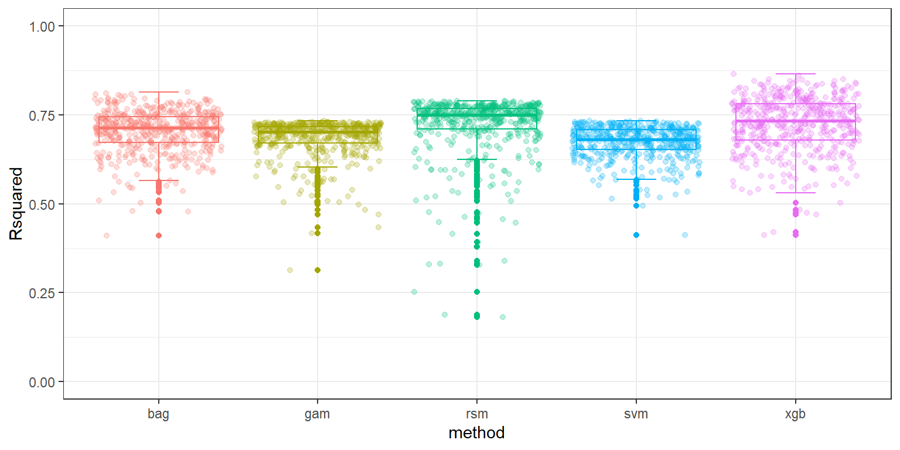
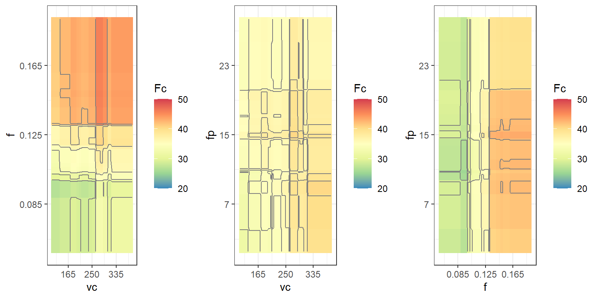
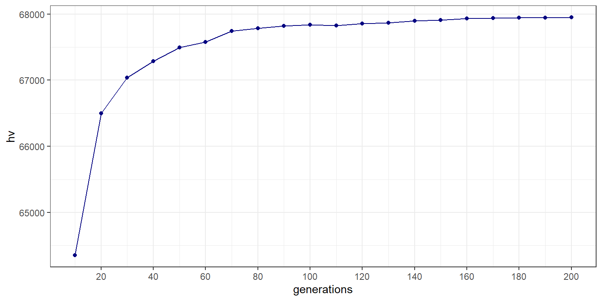
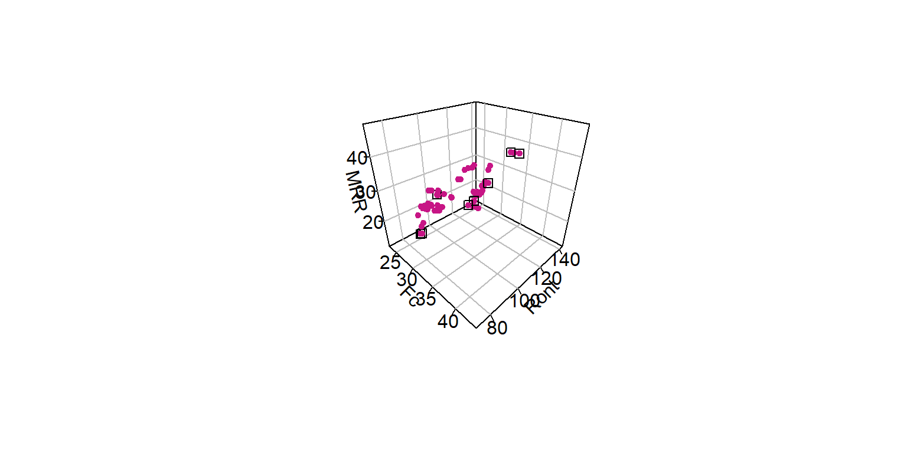

library(rsm)
library(DiceDesign)
library(caret)
library(dplyr)
library(splines)
library(e1071)
library(xgboost)
library(randomForest)
library(dplyr)
library(ggplot2)
library(mco)
library(plot3D)
library(emoa)
library(caRamel)
library(ggpubr)Multi-objective evolutionary optimization of extreme gradient boosting regression models of the internal turning of PEEK tubes
Loading libraries
Experimental design
Central composite design with Faure sampling aditional points:
plan_ccd <- ccd(basis = ~x1+x2+x3,
n0 = c(0,8),
alpha = "rotatable",
randomize = F,
coding = list (x1 ~ (vc - 250)/85,
x2 ~ (f - 0.125)/0.04,
x3 ~ (fp - 15)/8))
plan_ccd$vc <- plan_ccd$x1*85 + 250
plan_ccd$f <- plan_ccd$x2*0.04 + 0.125
plan_ccd$fp <- plan_ccd$x3*8 + 15
plan_ccd <- data.frame(plan_ccd)
set.seed(10)
f <- runif.faure(8,3)
f$design[,1] <- (f$design[,1] - 0.5)/0.5
f$design[,2] <- (f$design[,2] - 0.5)/0.5
f$design[,3] <- (f$design[,3] - 0.5)/0.5
plan_faure <- cbind(23:30, 23:30,
f$design, rep("3",8))
plan_faure <- data.frame(plan_faure)
plan_faure$X1 <- as.numeric(plan_faure$X1)
plan_faure$X2 <- as.numeric(plan_faure$X2)
plan_faure$X3 <- as.numeric(plan_faure$X3)
plan_faure$X4 <- as.numeric(plan_faure$X4)
plan_faure$X5 <- as.numeric(plan_faure$X5)
f$design[,1] <- f$design[,1]*85 + 250
f$design[,2] <- f$design[,2]*0.04 + 0.125
f$design[,3] <- f$design[,3]*8 + 15
plan_faure <- cbind(plan_faure, f$design)
colnames(plan_faure) <- c("run.order", "std.order",
"x1", "x2", "x3", "Block", "vc", "f", "fp")
plan <- rbind(plan_ccd, plan_faure)
plan$std.order <- 1:30
set.seed(10)
runorder <- sample(30, 30, replace = F)
plan$run.order <- runorder
head(plan) run.order std.order x1 x2 x3 Block vc f fp
1 11 1 -1 -1 -1 1 165 0.085 7
2 9 2 1 -1 -1 1 335 0.085 7
3 10 3 -1 1 -1 1 165 0.165 7
4 16 4 1 1 -1 1 335 0.165 7
5 12 5 -1 -1 1 1 165 0.085 23
6 23 6 1 -1 1 1 335 0.085 23# write.csv(plan, file = "plan.csv")Responses reading
respostas <- read.csv("Respostas.csv")
plan_respostas <- cbind(plan,respostas)
head(plan_respostas) run.order std.order x1 x2 x3 Block vc f fp Fc Ra Ront
1 11 1 -1 -1 -1 1 165 0.085 7 25.2195 1.8510 166.6557
2 9 2 1 -1 -1 1 335 0.085 7 34.8081 1.8666 123.9033
3 10 3 -1 1 -1 1 165 0.165 7 40.1323 4.0483 151.2919
4 16 4 1 1 -1 1 335 0.165 7 45.6892 4.9744 112.9433
5 12 5 -1 -1 1 1 165 0.085 23 29.2456 2.0304 139.2281
6 23 6 1 -1 1 1 335 0.085 23 29.5840 2.3512 56.7790RSM model selection
Function to calculate model performance metrics:
metrics <- function(pred, obs) {
RSE <- sum((obs - pred)^2)
SST <- sum((obs - mean(obs))^2)
R2 <- 1 - RSE/SST
MSE <- mean((obs - pred)^2)
RMSE <- sqrt(mean((obs - pred)^2))
MAE <- mean(abs(obs - pred))
return(
data.frame(RMSE = RMSE,
MSE = MSE,
R2 = R2,
MAE = MAE))
}RSM model reduction through backward elimination for Ra:
compRa <- lm(Ra ~ x1 + x2 + x3 + x1*x2 + x1*x3 + x2*x3 + I(x1^2) + I(x2^2) + I(x3^2),
data = plan_respostas)
summary(compRa)
Call:
lm(formula = Ra ~ x1 + x2 + x3 + x1 * x2 + x1 * x3 + x2 * x3 +
I(x1^2) + I(x2^2) + I(x3^2), data = plan_respostas)
Residuals:
Min 1Q Median 3Q Max
-0.57671 -0.16501 -0.01621 0.15869 0.75093
Coefficients:
Estimate Std. Error t value Pr(>|t|)
(Intercept) 2.780728 0.093259 29.817 < 2e-16 ***
x1 0.192097 0.082230 2.336 0.030 *
x2 1.303793 0.082230 15.855 8.62e-13 ***
x3 0.008383 0.082230 0.102 0.920
I(x1^2) 0.014186 0.079752 0.178 0.861
I(x2^2) 0.408238 0.079752 5.119 5.23e-05 ***
I(x3^2) -0.013947 0.079752 -0.175 0.863
x1:x2 0.020133 0.112374 0.179 0.860
x1:x3 -0.019334 0.112374 -0.172 0.865
x2:x3 -0.129438 0.112374 -1.152 0.263
---
Signif. codes: 0 '***' 0.001 '**' 0.01 '*' 0.05 '.' 0.1 ' ' 1
Residual standard error: 0.3257 on 20 degrees of freedom
Multiple R-squared: 0.9338, Adjusted R-squared: 0.904
F-statistic: 31.35 on 9 and 20 DF, p-value: 7.12e-10red_compRa <- step(compRa)Start: AIC=-59.48
Ra ~ x1 + x2 + x3 + x1 * x2 + x1 * x3 + x2 * x3 + I(x1^2) + I(x2^2) +
I(x3^2)
Df Sum of Sq RSS AIC
- x1:x3 1 0.00314 2.1243 -61.433
- I(x3^2) 1 0.00324 2.1244 -61.432
- I(x1^2) 1 0.00336 2.1245 -61.430
- x1:x2 1 0.00340 2.1245 -61.430
- x2:x3 1 0.14071 2.2618 -59.551
<none> 2.1211 -59.478
- I(x2^2) 1 2.77896 4.9001 -36.358
Step: AIC=-61.43
Ra ~ x1 + x2 + x3 + I(x1^2) + I(x2^2) + I(x3^2) + x1:x2 + x2:x3
Df Sum of Sq RSS AIC
- I(x3^2) 1 0.00334 2.1276 -63.386
- x1:x2 1 0.00342 2.1277 -63.385
- I(x1^2) 1 0.00348 2.1277 -63.384
- x2:x3 1 0.14063 2.2649 -61.510
<none> 2.1243 -61.433
- I(x2^2) 1 2.77599 4.9002 -38.357
Step: AIC=-63.39
Ra ~ x1 + x2 + x3 + I(x1^2) + I(x2^2) + x1:x2 + x2:x3
Df Sum of Sq RSS AIC
- x1:x2 1 0.00325 2.1308 -65.340
- I(x1^2) 1 0.00341 2.1310 -65.338
- x2:x3 1 0.13985 2.2674 -63.476
<none> 2.1276 -63.386
- I(x2^2) 1 2.77422 4.9018 -40.348
Step: AIC=-65.34
Ra ~ x1 + x2 + x3 + I(x1^2) + I(x2^2) + x2:x3
Df Sum of Sq RSS AIC
- I(x1^2) 1 0.00351 2.1344 -67.291
- x2:x3 1 0.13995 2.2708 -65.432
<none> 2.1308 -65.340
- x1 1 0.57878 2.7096 -60.132
- I(x2^2) 1 2.77162 4.9025 -42.344
Step: AIC=-67.29
Ra ~ x1 + x2 + x3 + I(x2^2) + x2:x3
Df Sum of Sq RSS AIC
- x2:x3 1 0.13892 2.2733 -67.399
<none> 2.1344 -67.291
- x1 1 0.57878 2.7131 -62.093
- I(x2^2) 1 2.77385 4.9082 -44.309
Step: AIC=-67.4
Ra ~ x1 + x2 + x3 + I(x2^2)
Df Sum of Sq RSS AIC
- x3 1 0.0011 2.2744 -69.385
<none> 2.2733 -67.399
- x1 1 0.5788 2.8521 -62.595
- I(x2^2) 1 2.7565 5.0297 -45.575
- x2 1 26.6618 28.9351 6.916
Step: AIC=-69.38
Ra ~ x1 + x2 + I(x2^2)
Df Sum of Sq RSS AIC
<none> 2.2744 -69.385
- x1 1 0.5777 2.8521 -64.595
- I(x2^2) 1 2.7565 5.0308 -47.568
- x2 1 26.6893 28.9636 4.945summary(red_compRa)
Call:
lm(formula = Ra ~ x1 + x2 + I(x2^2), data = plan_respostas)
Residuals:
Min 1Q Median 3Q Max
-0.55365 -0.18472 -0.03535 0.18699 0.73494
Coefficients:
Estimate Std. Error t value Pr(>|t|)
(Intercept) 2.78442 0.06600 42.187 < 2e-16 ***
x1 0.19177 0.07462 2.570 0.0163 *
x2 1.30347 0.07462 17.467 6.95e-16 ***
I(x2^2) 0.40629 0.07238 5.613 6.71e-06 ***
---
Signif. codes: 0 '***' 0.001 '**' 0.01 '*' 0.05 '.' 0.1 ' ' 1
Residual standard error: 0.2958 on 26 degrees of freedom
Multiple R-squared: 0.929, Adjusted R-squared: 0.9208
F-statistic: 113.4 on 3 and 26 DF, p-value: 4.699e-15RSM model comparison through k-fold for Ra:
nr <- 1:nrow(plan_respostas)
prop <- 0.1
nfolds <- round(1/prop,0)
fr <- round(prop*nrow(plan_respostas))
res.teste_Ra <- data.frame(fold = numeric(2*nfolds),
model = numeric(2*nfolds),
RMSE = numeric(2*nfolds),
Rsquared = numeric(2*nfolds),
MAE = numeric(2*nfolds))
set.seed(2)
for (i in 1:nfolds) {
fold <- sample(nr[!is.na(nr)], fr, replace = F)
assign(paste0("fold", i),fold)
nr[fold] <- NA
plan.tr <- plan_respostas[-fold,]
lm_Ra1 <- lm(Ra ~ x1 + x2 + x3 + x1*x2 + x1*x3 + x2*x3 + I(x1^2) + I(x2^2) + I(x3^2),
data = plan.tr)
lm_Ra2 <- lm(Ra ~ x1 + x2 + I(x2^2),
data = plan.tr)
assign(paste0("rsm_Ra1.", i), lm_Ra1)
assign(paste0("rsm_Ra2.", i), lm_Ra2)
res.teste.lm_Ra1 <- predict(lm_Ra1, newdata = plan_respostas[fold,])
res.teste.lm_Ra2 <- predict(lm_Ra2, newdata = plan_respostas[fold,])
testee.rsm1 <- data.frame(obs = plan_respostas$Ra[fold],
pred = res.teste.lm_Ra1)
testee.rsm2 <- data.frame(obs = plan_respostas$Ra[fold],
pred = res.teste.lm_Ra2)
res.teste.rsm1 <- data.frame(
rsm.Ra = defaultSummary(testee.rsm1))
res.teste.rsm2 <- data.frame(
rsm.Ra = defaultSummary(testee.rsm2))
assign(paste0("res.teste.rsm1", i), t(res.teste.rsm1))
assign(paste0("res.teste.rsm2", i), t(res.teste.rsm2))
j <- (i-1)*2+1
res.teste_Ra[j:(j+1),1] <- i
res.teste_Ra[j:(j+1),2] <- c("rsm1", "rsm2")
res.teste_Ra[j,3:5] <- t(res.teste.rsm1)
res.teste_Ra[j+1,3:5] <- t(res.teste.rsm2)
}
res.teste_Ra %>%
group_by(model) %>%
summarise_at(vars(RMSE, Rsquared, MAE), list(name = mean))# A tibble: 2 × 4
model RMSE_name Rsquared_name MAE_name
<chr> <dbl> <dbl> <dbl>
1 rsm1 0.440 0.948 0.399
2 rsm2 0.287 0.953 0.259res.teste_Ra %>%
group_by(model) %>%
summarise_at(vars(RMSE, Rsquared, MAE), list(name = sd))# A tibble: 2 × 4
model RMSE_name Rsquared_name MAE_name
<chr> <dbl> <dbl> <dbl>
1 rsm1 0.266 0.0683 0.260
2 rsm2 0.128 0.0690 0.123res <- wilcox.test(RMSE ~ model, res.teste_Ra)
res
Wilcoxon rank sum exact test
data: RMSE by model
W = 72, p-value = 0.1051
alternative hypothesis: true location shift is not equal to 0res2 <- wilcox.test(MAE ~ model, res.teste_Ra)
res2
Wilcoxon rank sum exact test
data: MAE by model
W = 70, p-value = 0.1431
alternative hypothesis: true location shift is not equal to 0RSM model reduction through backward elimination for Fc:
compFc <- lm(Fc ~ x1 + x2 + x3 + x1*x2 + x1*x3 + x2*x3 + I(x1^2) + I(x2^2) + I(x3^2),
data = plan_respostas)
summary(compFc)
Call:
lm(formula = Fc ~ x1 + x2 + x3 + x1 * x2 + x1 * x3 + x2 * x3 +
I(x1^2) + I(x2^2) + I(x3^2), data = plan_respostas)
Residuals:
Min 1Q Median 3Q Max
-5.0816 -1.4222 -0.0153 0.8182 7.1310
Coefficients:
Estimate Std. Error t value Pr(>|t|)
(Intercept) 37.9235 0.8771 43.237 < 2e-16 ***
x1 1.1475 0.7734 1.484 0.153
x2 6.6081 0.7734 8.544 4.15e-08 ***
x3 -0.1505 0.7734 -0.195 0.848
I(x1^2) -0.5207 0.7501 -0.694 0.496
I(x2^2) -0.9104 0.7501 -1.214 0.239
I(x3^2) -1.0615 0.7501 -1.415 0.172
x1:x2 -0.2820 1.0569 -0.267 0.792
x1:x3 -1.5571 1.0569 -1.473 0.156
x2:x3 -0.7298 1.0569 -0.691 0.498
---
Signif. codes: 0 '***' 0.001 '**' 0.01 '*' 0.05 '.' 0.1 ' ' 1
Residual standard error: 3.063 on 20 degrees of freedom
Multiple R-squared: 0.803, Adjusted R-squared: 0.7144
F-statistic: 9.061 on 9 and 20 DF, p-value: 2.413e-05red_compFc <- step(compFc)Start: AIC=75
Fc ~ x1 + x2 + x3 + x1 * x2 + x1 * x3 + x2 * x3 + I(x1^2) + I(x2^2) +
I(x3^2)
Df Sum of Sq RSS AIC
- x1:x2 1 0.6678 188.29 73.104
- x2:x3 1 4.4734 192.10 73.705
- I(x1^2) 1 4.5208 192.15 73.712
<none> 187.63 74.998
- I(x2^2) 1 13.8216 201.45 75.130
- I(x3^2) 1 18.7903 206.42 75.861
- x1:x3 1 20.3627 207.99 76.089
Step: AIC=73.1
Fc ~ x1 + x2 + x3 + I(x1^2) + I(x2^2) + I(x3^2) + x1:x3 + x2:x3
Df Sum of Sq RSS AIC
- x2:x3 1 4.467 192.76 71.808
- I(x1^2) 1 4.572 192.87 71.824
<none> 188.29 73.104
- I(x2^2) 1 13.710 202.00 73.213
- I(x3^2) 1 18.985 207.28 73.986
- x1:x3 1 20.349 208.64 74.183
Step: AIC=71.81
Fc ~ x1 + x2 + x3 + I(x1^2) + I(x2^2) + I(x3^2) + x1:x3
Df Sum of Sq RSS AIC
- I(x1^2) 1 4.81 197.57 70.547
<none> 192.76 71.808
- I(x2^2) 1 13.94 206.70 71.903
- I(x3^2) 1 18.64 211.40 72.577
- x1:x3 1 20.31 213.08 72.813
- x2 1 684.90 877.66 115.282
Step: AIC=70.55
Fc ~ x1 + x2 + x3 + I(x2^2) + I(x3^2) + x1:x3
Df Sum of Sq RSS AIC
<none> 197.57 70.547
- I(x2^2) 1 14.12 211.69 70.618
- I(x3^2) 1 18.84 216.41 71.280
- x1:x3 1 19.94 217.51 71.432
- x2 1 684.90 882.47 113.446summary(red_compFc)
Call:
lm(formula = Fc ~ x1 + x2 + x3 + I(x2^2) + I(x3^2) + x1:x3, data = plan_respostas)
Residuals:
Min 1Q Median 3Q Max
-4.8342 -1.6398 0.1479 1.1333 7.3784
Coefficients:
Estimate Std. Error t value Pr(>|t|)
(Intercept) 37.6761 0.7534 50.011 < 2e-16 ***
x1 1.1475 0.7401 1.551 0.135
x2 6.6081 0.7401 8.929 6.19e-09 ***
x3 -0.1505 0.7401 -0.203 0.841
I(x2^2) -0.9198 0.7175 -1.282 0.213
I(x3^2) -1.0623 0.7173 -1.481 0.152
x1:x3 -1.5406 1.0111 -1.524 0.141
---
Signif. codes: 0 '***' 0.001 '**' 0.01 '*' 0.05 '.' 0.1 ' ' 1
Residual standard error: 2.931 on 23 degrees of freedom
Multiple R-squared: 0.7926, Adjusted R-squared: 0.7385
F-statistic: 14.65 on 6 and 23 DF, p-value: 7.684e-07RSM model comparison through k-fold for Fc:
nr <- 1:nrow(plan_respostas)
prop <- 0.1
nfolds <- round(1/prop,0)
fr <- round(prop*nrow(plan_respostas))
res.teste_Fc <- data.frame(fold = numeric(2*nfolds),
model = numeric(2*nfolds),
RMSE = numeric(2*nfolds),
Rsquared = numeric(2*nfolds),
MAE = numeric(2*nfolds))
set.seed(2)
for (i in 1:nfolds) {
fold <- sample(nr[!is.na(nr)], fr, replace = F)
assign(paste0("fold", i),fold)
nr[fold] <- NA
plan.tr <- plan_respostas[-fold,]
lm_Fc1 <- lm(Fc ~ x1 + x2 + x3 + x1*x2 + x1*x3 + x2*x3 + I(x1^2) + I(x2^2) + I(x3^2),
data = plan.tr)
lm_Fc2 <- lm(Fc ~ x1 + x2 + I(x2^2),
data = plan.tr)
assign(paste0("rsm_Fc1.", i), lm_Fc1)
assign(paste0("rsm_Fc2.", i), lm_Fc2)
res.teste.lm_Fc1 <- predict(lm_Fc1, newdata = plan_respostas[fold,])
res.teste.lm_Fc2 <- predict(lm_Fc2, newdata = plan_respostas[fold,])
testee.rsm1 <- data.frame(obs = plan_respostas$Fc[fold],
pred = res.teste.lm_Fc1)
testee.rsm2 <- data.frame(obs = plan_respostas$Fc[fold],
pred = res.teste.lm_Fc2)
res.teste.rsm1 <- data.frame(
rsm.Fc = defaultSummary(testee.rsm1))
res.teste.rsm2 <- data.frame(
rsm.Fc = defaultSummary(testee.rsm2))
assign(paste0("res.teste.rsm1", i), t(res.teste.rsm1))
assign(paste0("res.teste.rsm2", i), t(res.teste.rsm2))
j <- (i-1)*2+1
res.teste_Fc[j:(j+1),1] <- i
res.teste_Fc[j:(j+1),2] <- c("rsm1", "rsm2")
res.teste_Fc[j,3:5] <- t(res.teste.rsm1)
res.teste_Fc[j+1,3:5] <- t(res.teste.rsm2)
}
res.teste_Fc %>%
group_by(model) %>%
summarise_at(vars(RMSE, Rsquared, MAE), list(name = mean))# A tibble: 2 × 4
model RMSE_name Rsquared_name MAE_name
<chr> <dbl> <dbl> <dbl>
1 rsm1 3.07 0.761 2.40
2 rsm2 2.95 0.705 2.53res.teste_Fc %>%
group_by(model) %>%
summarise_at(vars(RMSE, Rsquared, MAE), list(name = sd))# A tibble: 2 × 4
model RMSE_name Rsquared_name MAE_name
<chr> <dbl> <dbl> <dbl>
1 rsm1 1.55 0.302 1.24
2 rsm2 1.11 0.353 0.919res <- wilcox.test(RMSE ~ model, res.teste_Fc)
res
Wilcoxon rank sum exact test
data: RMSE by model
W = 55, p-value = 0.7394
alternative hypothesis: true location shift is not equal to 0res2 <- wilcox.test(MAE ~ model, res.teste_Fc)
res2
Wilcoxon rank sum exact test
data: MAE by model
W = 43, p-value = 0.6305
alternative hypothesis: true location shift is not equal to 0RSM model reduction through backward elimination for Ront:
compRont <- lm(Ront ~ x1 + x2 + x3 + x1*x2 + x1*x3 + x2*x3 + I(x1^2) + I(x2^2) + I(x3^2), data = plan_respostas)
summary(compRont)
Call:
lm(formula = Ront ~ x1 + x2 + x3 + x1 * x2 + x1 * x3 + x2 * x3 +
I(x1^2) + I(x2^2) + I(x3^2), data = plan_respostas)
Residuals:
Min 1Q Median 3Q Max
-56.912 -18.351 0.821 17.193 48.905
Coefficients:
Estimate Std. Error t value Pr(>|t|)
(Intercept) 128.4473 9.5242 13.486 1.68e-11 ***
x1 -14.5739 8.3980 -1.735 0.0981 .
x2 10.5112 8.3980 1.252 0.2251
x3 -0.1647 8.3980 -0.020 0.9846
I(x1^2) -8.4242 8.1448 -1.034 0.3133
I(x2^2) 4.1097 8.1448 0.505 0.6194
I(x3^2) 6.8016 8.1448 0.835 0.4135
x1:x2 13.4947 11.4764 1.176 0.2535
x1:x3 5.8699 11.4764 0.511 0.6146
x2:x3 15.9508 11.4764 1.390 0.1798
---
Signif. codes: 0 '***' 0.001 '**' 0.01 '*' 0.05 '.' 0.1 ' ' 1
Residual standard error: 33.26 on 20 degrees of freedom
Multiple R-squared: 0.3392, Adjusted R-squared: 0.04191
F-statistic: 1.141 on 9 and 20 DF, p-value: 0.3812red_compRont <- step(compRont)Start: AIC=218.1
Ront ~ x1 + x2 + x3 + x1 * x2 + x1 * x3 + x2 * x3 + I(x1^2) +
I(x2^2) + I(x3^2)
Df Sum of Sq RSS AIC
- I(x2^2) 1 281.63 22405 216.47
- x1:x3 1 289.38 22413 216.49
- I(x3^2) 1 771.39 22895 217.12
- I(x1^2) 1 1183.34 23307 217.66
<none> 22123 218.10
- x1:x2 1 1529.44 23653 218.10
- x2:x3 1 2136.82 24260 218.86
Step: AIC=216.48
Ront ~ x1 + x2 + x3 + I(x1^2) + I(x3^2) + x1:x2 + x1:x3 + x2:x3
Df Sum of Sq RSS AIC
- x1:x3 1 304.41 22709 214.88
- I(x3^2) 1 781.37 23186 215.50
- I(x1^2) 1 1171.28 23576 216.00
- x1:x2 1 1504.92 23910 216.43
<none> 22405 216.47
- x2:x3 1 2159.73 24565 217.24
Step: AIC=214.88
Ront ~ x1 + x2 + x3 + I(x1^2) + I(x3^2) + x1:x2 + x2:x3
Df Sum of Sq RSS AIC
- I(x3^2) 1 795.96 23505 213.91
- I(x1^2) 1 1194.41 23904 214.42
- x1:x2 1 1501.72 24211 214.80
<none> 22709 214.88
- x2:x3 1 2157.30 24867 215.60
Step: AIC=213.91
Ront ~ x1 + x2 + x3 + I(x1^2) + x1:x2 + x2:x3
Df Sum of Sq RSS AIC
- I(x1^2) 1 1174.3 24680 213.38
- x1:x2 1 1558.8 25064 213.84
<none> 23505 213.91
- x2:x3 1 2108.4 25614 214.49
Step: AIC=213.38
Ront ~ x1 + x2 + x3 + x1:x2 + x2:x3
Df Sum of Sq RSS AIC
- x1:x2 1 1520.0 26200 213.17
<none> 24680 213.38
- x2:x3 1 2029.8 26709 213.75
Step: AIC=213.17
Ront ~ x1 + x2 + x3 + x2:x3
Df Sum of Sq RSS AIC
<none> 26200 213.17
- x2:x3 1 2021.9 28222 213.40
- x1 1 3331.4 29531 214.76summary(red_compRont)
Call:
lm(formula = Ront ~ x1 + x2 + x3 + x2:x3, data = plan_respostas)
Residuals:
Min 1Q Median 3Q Max
-62.17 -20.04 1.86 17.17 52.75
Coefficients:
Estimate Std. Error t value Pr(>|t|)
(Intercept) 129.3602 5.9145 21.872 <2e-16 ***
x1 -14.5739 8.1741 -1.783 0.0867 .
x2 10.5112 8.1741 1.286 0.2103
x3 -0.1647 8.1741 -0.020 0.9841
x2:x3 15.5063 11.1636 1.389 0.1771
---
Signif. codes: 0 '***' 0.001 '**' 0.01 '*' 0.05 '.' 0.1 ' ' 1
Residual standard error: 32.37 on 25 degrees of freedom
Multiple R-squared: 0.2175, Adjusted R-squared: 0.0923
F-statistic: 1.737 on 4 and 25 DF, p-value: 0.1734RSM model comparison through k-fold for Ront:
nr <- 1:nrow(plan_respostas)
prop <- 0.1
nfolds <- round(1/prop,0)
fr <- round(prop*nrow(plan_respostas))
res.teste_Ront <- data.frame(fold = numeric(2*nfolds),
model = numeric(2*nfolds),
RMSE = numeric(2*nfolds),
Rsquared = numeric(2*nfolds),
MAE = numeric(2*nfolds))
set.seed(2)
for (i in 1:nfolds) {
fold <- sample(nr[!is.na(nr)], fr, replace = F)
assign(paste0("fold", i),fold)
nr[fold] <- NA
plan.tr <- plan_respostas[-fold,]
lm_Ront1 <- lm(Ront ~ x1 + x2 + x3 + x1*x2 + x1*x3 + x2*x3 + I(x1^2) + I(x2^2) + I(x3^2),
data = plan.tr)
lm_Ront2 <- lm(Ront ~ x1 + x2 + I(x2^2),
data = plan.tr)
assign(paste0("rsm_Ront1.", i), lm_Ront1)
assign(paste0("rsm_Ront2.", i), lm_Ront2)
res.teste.lm_Ront1 <- predict(lm_Ront1, newdata = plan_respostas[fold,])
res.teste.lm_Ront2 <- predict(lm_Ront2, newdata = plan_respostas[fold,])
testee.rsm1 <- data.frame(obs = plan_respostas$Ront[fold],
pred = res.teste.lm_Ront1)
testee.rsm2 <- data.frame(obs = plan_respostas$Ront[fold],
pred = res.teste.lm_Ront2)
res.teste.rsm1 <- data.frame(
rsm.Ront = defaultSummary(testee.rsm1))
res.teste.rsm2 <- data.frame(
rsm.Ront = defaultSummary(testee.rsm2))
assign(paste0("res.teste.rsm1", i), t(res.teste.rsm1))
assign(paste0("res.teste.rsm2", i), t(res.teste.rsm2))
j <- (i-1)*2+1
res.teste_Ront[j:(j+1),1] <- i
res.teste_Ront[j:(j+1),2] <- c("rsm1", "rsm2")
res.teste_Ront[j,3:5] <- t(res.teste.rsm1)
res.teste_Ront[j+1,3:5] <- t(res.teste.rsm2)
}
res.teste_Ront %>%
group_by(model) %>%
summarise_at(vars(RMSE, Rsquared, MAE), list(name = mean))# A tibble: 2 × 4
model RMSE_name Rsquared_name MAE_name
<chr> <dbl> <dbl> <dbl>
1 rsm1 36.1 0.527 31.6
2 rsm2 30.9 0.512 28.0res.teste_Ront %>%
group_by(model) %>%
summarise_at(vars(RMSE, Rsquared, MAE), list(name = sd))# A tibble: 2 × 4
model RMSE_name Rsquared_name MAE_name
<chr> <dbl> <dbl> <dbl>
1 rsm1 12.4 0.240 11.5
2 rsm2 15.6 0.322 15.6res <- wilcox.test(RMSE ~ model, res.teste_Ront)
res
Wilcoxon rank sum exact test
data: RMSE by model
W = 60, p-value = 0.4813
alternative hypothesis: true location shift is not equal to 0res2 <- wilcox.test(MAE ~ model, res.teste_Ront)
res2
Wilcoxon rank sum exact test
data: MAE by model
W = 59, p-value = 0.5288
alternative hypothesis: true location shift is not equal to 0GAM model selection
GAM model reduction through backward elimination for Ra:
comp1 <- lm(Ra ~ ns(x1,3) + ns(x2,3) + ns(x3,3),
data = plan_respostas)
summary(comp1)
Call:
lm(formula = Ra ~ ns(x1, 3) + ns(x2, 3) + ns(x3, 3), data = plan_respostas)
Residuals:
Min 1Q Median 3Q Max
-0.53275 -0.18663 0.02677 0.20672 0.57518
Coefficients:
Estimate Std. Error t value Pr(>|t|)
(Intercept) 1.29018 0.44682 2.887 0.009105 **
ns(x1, 3)1 0.20903 0.27310 0.765 0.452962
ns(x1, 3)2 1.03094 0.63320 1.628 0.119146
ns(x1, 3)3 0.63206 0.29198 2.165 0.042676 *
ns(x2, 3)1 1.81975 0.27310 6.663 1.74e-06 ***
ns(x2, 3)2 2.95561 0.63320 4.668 0.000148 ***
ns(x2, 3)3 4.08276 0.29198 13.983 8.72e-12 ***
ns(x3, 3)1 0.01231 0.27310 0.045 0.964492
ns(x3, 3)2 0.29188 0.63320 0.461 0.649797
ns(x3, 3)3 0.04800 0.29198 0.164 0.871076
---
Signif. codes: 0 '***' 0.001 '**' 0.01 '*' 0.05 '.' 0.1 ' ' 1
Residual standard error: 0.3159 on 20 degrees of freedom
Multiple R-squared: 0.9377, Adjusted R-squared: 0.9097
F-statistic: 33.44 on 9 and 20 DF, p-value: 3.933e-10red_comp1 <- step(comp1)Start: AIC=-61.3
Ra ~ ns(x1, 3) + ns(x2, 3) + ns(x3, 3)
Df Sum of Sq RSS AIC
- ns(x3, 3) 3 0.0243 2.0205 -66.935
<none> 1.9963 -61.298
- ns(x1, 3) 3 0.6009 2.5972 -59.403
- ns(x2, 3) 3 29.2660 31.2623 15.236
Step: AIC=-66.94
Ra ~ ns(x1, 3) + ns(x2, 3)
Df Sum of Sq RSS AIC
<none> 2.0205 -66.935
- ns(x1, 3) 3 0.613 2.6335 -64.986
- ns(x2, 3) 3 29.277 31.2974 9.270summary(red_comp1)
Call:
lm(formula = Ra ~ ns(x1, 3) + ns(x2, 3), data = plan_respostas)
Residuals:
Min 1Q Median 3Q Max
-0.54310 -0.19935 0.03477 0.22069 0.58573
Coefficients:
Estimate Std. Error t value Pr(>|t|)
(Intercept) 1.4076 0.3498 4.023 0.000531 ***
ns(x1, 3)1 0.2155 0.2556 0.843 0.407987
ns(x1, 3)2 1.0419 0.5933 1.756 0.092373 .
ns(x1, 3)3 0.6323 0.2732 2.314 0.029960 *
ns(x2, 3)1 1.8197 0.2551 7.132 2.90e-07 ***
ns(x2, 3)2 2.9669 0.5930 5.003 4.63e-05 ***
ns(x2, 3)3 4.0801 0.2738 14.902 2.62e-13 ***
---
Signif. codes: 0 '***' 0.001 '**' 0.01 '*' 0.05 '.' 0.1 ' ' 1
Residual standard error: 0.2964 on 23 degrees of freedom
Multiple R-squared: 0.9369, Adjusted R-squared: 0.9205
F-statistic: 56.95 on 6 and 23 DF, p-value: 1.179e-12GAM model comparison through k-fold for Ra:
nr <- 1:nrow(plan_respostas)
prop <- 0.1
nfolds <- round(1/prop,0)
fr <- round(prop*nrow(plan_respostas))
res.teste_Ra <- data.frame(fold = numeric(2*nfolds),
model = numeric(2*nfolds),
RMSE = numeric(2*nfolds),
Rsquared = numeric(2*nfolds),
MAE = numeric(2*nfolds))
set.seed(2)
for (i in 1:nfolds) {
fold <- sample(nr[!is.na(nr)], fr, replace = F)
assign(paste0("fold", i),fold)
nr[fold] <- NA
plan.tr <- plan_respostas[-fold,]
gam_Ra1 <- lm(Ra ~ ns(x1,3) + ns(x2,3) + ns(x3,3), plan.tr)
summary(gam_Ra1)
gam_Ra2 <- lm(Ra ~ ns(x1, 3) + ns(x2, 3), plan.tr)
summary(gam_Ra2)
assign(paste0("gam_Ra1.", i), gam_Ra1)
assign(paste0("gam_Ra2.", i), gam_Ra2)
res.teste.lm_Ra1 <- predict(gam_Ra1, newdata = plan_respostas[fold,])
res.teste.lm_Ra2 <- predict(gam_Ra2, newdata = plan_respostas[fold,])
testee.gam1 <- data.frame(obs = plan_respostas$Ra[fold],
pred = res.teste.lm_Ra1)
testee.gam2 <- data.frame(obs = plan_respostas$Ra[fold],
pred = res.teste.lm_Ra2)
res.teste.gam1 <- data.frame(
gam.Ra = defaultSummary(testee.gam1))
res.teste.gam2 <- data.frame(
gam.Ra = defaultSummary(testee.gam2))
assign(paste0("res.teste.gam1", i), t(res.teste.gam1))
assign(paste0("res.teste.gam2", i), t(res.teste.gam2))
j <- (i-1)*2+1
res.teste_Ra[j:(j+1),1] <- i
res.teste_Ra[j:(j+1),2] <- c("gam1", "gam2")
res.teste_Ra[j,3:5] <- t(res.teste.gam1)
res.teste_Ra[j+1,3:5] <- t(res.teste.gam2)
}
res.teste_Ra %>%
group_by(model) %>%
summarise_at(vars(RMSE, Rsquared, MAE), list(name = mean))# A tibble: 2 × 4
model RMSE_name Rsquared_name MAE_name
<chr> <dbl> <dbl> <dbl>
1 gam1 0.408 0.931 0.359
2 gam2 0.377 0.919 0.333res.teste_Ra %>%
group_by(model) %>%
summarise_at(vars(RMSE, Rsquared, MAE), list(name = sd))# A tibble: 2 × 4
model RMSE_name Rsquared_name MAE_name
<chr> <dbl> <dbl> <dbl>
1 gam1 0.238 0.0972 0.204
2 gam2 0.240 0.116 0.205res <- wilcox.test(RMSE ~ model, res.teste_Ra)
res
Wilcoxon rank sum exact test
data: RMSE by model
W = 60, p-value = 0.4813
alternative hypothesis: true location shift is not equal to 0res2 <- wilcox.test(MAE ~ model, res.teste_Ra)
res2
Wilcoxon rank sum exact test
data: MAE by model
W = 62, p-value = 0.393
alternative hypothesis: true location shift is not equal to 0GAM model reduction through backward elimination for Fc:
comp1 <- lm(Fc ~ ns(x1,3) + ns(x2,3) + ns(x3,3),
data = plan_respostas)
summary(comp1)
Call:
lm(formula = Fc ~ ns(x1, 3) + ns(x2, 3) + ns(x3, 3), data = plan_respostas)
Residuals:
Min 1Q Median 3Q Max
-5.1916 -1.9075 -0.2387 1.2635 7.0210
Coefficients:
Estimate Std. Error t value Pr(>|t|)
(Intercept) 20.58819 4.54583 4.529 0.000204 ***
ns(x1, 3)1 3.31300 2.77842 1.192 0.247058
ns(x1, 3)2 5.10524 6.44195 0.793 0.437369
ns(x1, 3)3 2.41234 2.97047 0.812 0.426291
ns(x2, 3)1 13.27012 2.77842 4.776 0.000115 ***
ns(x2, 3)2 27.71851 6.44195 4.303 0.000347 ***
ns(x2, 3)3 17.42074 2.97047 5.865 9.76e-06 ***
ns(x3, 3)1 2.70230 2.77842 0.973 0.342368
ns(x3, 3)2 0.04413 6.44195 0.007 0.994602
ns(x3, 3)3 -2.72611 2.97047 -0.918 0.369693
---
Signif. codes: 0 '***' 0.001 '**' 0.01 '*' 0.05 '.' 0.1 ' ' 1
Residual standard error: 3.214 on 20 degrees of freedom
Multiple R-squared: 0.7831, Adjusted R-squared: 0.6855
F-statistic: 8.024 on 9 and 20 DF, p-value: 5.856e-05red_comp1 <- step(comp1)Start: AIC=77.89
Fc ~ ns(x1, 3) + ns(x2, 3) + ns(x3, 3)
Df Sum of Sq RSS AIC
- ns(x3, 3) 3 22.19 228.81 74.951
- ns(x1, 3) 3 26.62 233.24 75.526
<none> 206.62 77.891
- ns(x2, 3) 3 697.44 904.06 116.171
Step: AIC=74.95
Fc ~ ns(x1, 3) + ns(x2, 3)
Df Sum of Sq RSS AIC
- ns(x1, 3) 3 26.50 255.31 72.238
<none> 228.81 74.951
- ns(x2, 3) 3 702.26 931.08 111.054
Step: AIC=72.24
Fc ~ ns(x2, 3)
Df Sum of Sq RSS AIC
<none> 255.31 72.238
- ns(x2, 3) 3 697.35 952.65 105.742summary(red_comp1)
Call:
lm(formula = Fc ~ ns(x2, 3), data = plan_respostas)
Residuals:
Min 1Q Median 3Q Max
-4.4130 -2.0800 -0.0482 1.1191 7.7996
Coefficients:
Estimate Std. Error t value Pr(>|t|)
(Intercept) 23.812 2.694 8.839 2.59e-09 ***
ns(x2, 3)1 13.365 2.691 4.966 3.68e-05 ***
ns(x2, 3)2 27.946 6.261 4.464 0.000138 ***
ns(x2, 3)3 17.103 2.887 5.924 3.00e-06 ***
---
Signif. codes: 0 '***' 0.001 '**' 0.01 '*' 0.05 '.' 0.1 ' ' 1
Residual standard error: 3.134 on 26 degrees of freedom
Multiple R-squared: 0.732, Adjusted R-squared: 0.7011
F-statistic: 23.67 on 3 and 26 DF, p-value: 1.334e-07GAM model comparison through k-fold for Fc:
nr <- 1:nrow(plan_respostas)
prop <- 0.1
nfolds <- round(1/prop,0)
fr <- round(prop*nrow(plan_respostas))
res.teste_Fc <- data.frame(fold = numeric(2*nfolds),
model = numeric(2*nfolds),
RMSE = numeric(2*nfolds),
Rsquared = numeric(2*nfolds),
MAE = numeric(2*nfolds))
set.seed(2)
for (i in 1:nfolds) {
fold <- sample(nr[!is.na(nr)], fr, replace = F)
assign(paste0("fold", i),fold)
nr[fold] <- NA
plan.tr <- plan_respostas[-fold,]
gam_Fc1 <- lm(Fc ~ ns(x1,3) + ns(x2,3) + ns(x3,3), plan.tr)
summary(gam_Fc1)
gam_Fc2 <- lm(Fc ~ ns(x1, 3) + ns(x2, 3), plan.tr)
summary(gam_Fc2)
assign(paste0("gam_Fc1.", i), gam_Fc1)
assign(paste0("gam_Fc2.", i), gam_Fc2)
res.teste.lm_Fc1 <- predict(gam_Fc1, newdata = plan_respostas[fold,])
res.teste.lm_Fc2 <- predict(gam_Fc2, newdata = plan_respostas[fold,])
testee.gam1 <- data.frame(obs = plan_respostas$Fc[fold],
pred = res.teste.lm_Fc1)
testee.gam2 <- data.frame(obs = plan_respostas$Fc[fold],
pred = res.teste.lm_Fc2)
res.teste.gam1 <- data.frame(
gam.Fc = defaultSummary(testee.gam1))
res.teste.gam2 <- data.frame(
gam.Fc = defaultSummary(testee.gam2))
assign(paste0("res.teste.gam1", i), t(res.teste.gam1))
assign(paste0("res.teste.gam2", i), t(res.teste.gam2))
j <- (i-1)*2+1
res.teste_Fc[j:(j+1),1] <- i
res.teste_Fc[j:(j+1),2] <- c("gam1", "gam2")
res.teste_Fc[j,3:5] <- t(res.teste.gam1)
res.teste_Fc[j+1,3:5] <- t(res.teste.gam2)
}
res.teste_Fc %>%
group_by(model) %>%
summarise_at(vars(RMSE, Rsquared, MAE), list(name = mean))# A tibble: 2 × 4
model RMSE_name Rsquared_name MAE_name
<chr> <dbl> <dbl> <dbl>
1 gam1 3.39 0.688 2.88
2 gam2 3.16 0.691 2.79res.teste_Fc %>%
group_by(model) %>%
summarise_at(vars(RMSE, Rsquared, MAE), list(name = sd))# A tibble: 2 × 4
model RMSE_name Rsquared_name MAE_name
<chr> <dbl> <dbl> <dbl>
1 gam1 1.23 0.303 1.09
2 gam2 1.03 0.357 0.950res <- wilcox.test(RMSE ~ model, res.teste_Fc)
res
Wilcoxon rank sum exact test
data: RMSE by model
W = 56, p-value = 0.6842
alternative hypothesis: true location shift is not equal to 0res2 <- wilcox.test(MAE ~ model, res.teste_Fc)
res2
Wilcoxon rank sum exact test
data: MAE by model
W = 53, p-value = 0.8534
alternative hypothesis: true location shift is not equal to 0GAM model reduction through backward elimination for Ront:
comp1 <- lm(Ront ~ ns(x1,3) + ns(x2,3) + ns(x3,3),
data = plan_respostas)
summary(comp1)
Call:
lm(formula = Ront ~ ns(x1, 3) + ns(x2, 3) + ns(x3, 3), data = plan_respostas)
Residuals:
Min 1Q Median 3Q Max
-65.123 -10.560 1.104 21.649 47.933
Coefficients:
Estimate Std. Error t value Pr(>|t|)
(Intercept) 154.605 49.888 3.099 0.00566 **
ns(x1, 3)1 -7.747 30.491 -0.254 0.80203
ns(x1, 3)2 -20.964 70.696 -0.297 0.76988
ns(x1, 3)3 -53.188 32.599 -1.632 0.11842
ns(x2, 3)1 13.345 30.491 0.438 0.66631
ns(x2, 3)2 24.398 70.696 0.345 0.73362
ns(x2, 3)3 34.332 32.599 1.053 0.30483
ns(x3, 3)1 9.693 30.491 0.318 0.75386
ns(x3, 3)2 -72.187 70.696 -1.021 0.31941
ns(x3, 3)3 -7.048 32.599 -0.216 0.83102
---
Signif. codes: 0 '***' 0.001 '**' 0.01 '*' 0.05 '.' 0.1 ' ' 1
Residual standard error: 35.27 on 20 degrees of freedom
Multiple R-squared: 0.2568, Adjusted R-squared: -0.07768
F-statistic: 0.7677 on 9 and 20 DF, p-value: 0.6468red_comp1 <- step(comp1)Start: AIC=221.62
Ront ~ ns(x1, 3) + ns(x2, 3) + ns(x3, 3)
Df Sum of Sq RSS AIC
- ns(x3, 3) 3 1716.1 26601 217.62
- ns(x2, 3) 3 1978.5 26863 217.92
- ns(x1, 3) 3 4576.3 29461 220.69
<none> 24885 221.62
Step: AIC=217.63
Ront ~ ns(x1, 3) + ns(x2, 3)
Df Sum of Sq RSS AIC
- ns(x2, 3) 3 2055.9 28657 213.86
- ns(x1, 3) 3 4740.7 31342 216.54
<none> 26601 217.62
Step: AIC=213.86
Ront ~ ns(x1, 3)
Df Sum of Sq RSS AIC
- ns(x1, 3) 3 4825.1 33482 212.53
<none> 28657 213.86
Step: AIC=212.53
Ront ~ 1summary(red_comp1)
Call:
lm(formula = Ront ~ 1, data = plan_respostas)
Residuals:
Min 1Q Median 3Q Max
-74.227 -16.076 0.214 26.518 47.388
Coefficients:
Estimate Std. Error t value Pr(>|t|)
(Intercept) 129.054 6.204 20.8 <2e-16 ***
---
Signif. codes: 0 '***' 0.001 '**' 0.01 '*' 0.05 '.' 0.1 ' ' 1
Residual standard error: 33.98 on 29 degrees of freedomGAM model comparison through k-fold for Ront:
nr <- 1:nrow(plan_respostas)
prop <- 0.1
nfolds <- round(1/prop,0)
fr <- round(prop*nrow(plan_respostas))
res.teste_Ront <- data.frame(fold = numeric(2*nfolds),
model = numeric(2*nfolds),
RMSE = numeric(2*nfolds),
Rsquared = numeric(2*nfolds),
MAE = numeric(2*nfolds))
set.seed(2)
for (i in 1:nfolds) {
fold <- sample(nr[!is.na(nr)], fr, replace = F)
assign(paste0("fold", i),fold)
nr[fold] <- NA
plan.tr <- plan_respostas[-fold,]
gam_Ront1 <- lm(Ront ~ ns(x1,3) + ns(x2,3) + ns(x3,3), plan.tr)
summary(gam_Ront1)
gam_Ront2 <- lm(Ront ~ ns(x1, 3) + ns(x2, 3), plan.tr)
summary(gam_Ront2)
assign(paste0("gam_Ront1.", i), gam_Ront1)
assign(paste0("gam_Ront2.", i), gam_Ront2)
res.teste.lm_Ront1 <- predict(gam_Ront1, newdata = plan_respostas[fold,])
res.teste.lm_Ront2 <- predict(gam_Ront2, newdata = plan_respostas[fold,])
testee.gam1 <- data.frame(obs = plan_respostas$Ront[fold],
pred = res.teste.lm_Ront1)
testee.gam2 <- data.frame(obs = plan_respostas$Ront[fold],
pred = res.teste.lm_Ront2)
res.teste.gam1 <- data.frame(
gam.Ront = defaultSummary(testee.gam1))
res.teste.gam2 <- data.frame(
gam.Ront = defaultSummary(testee.gam2))
assign(paste0("res.teste.gam1", i), t(res.teste.gam1))
assign(paste0("res.teste.gam2", i), t(res.teste.gam2))
j <- (i-1)*2+1
res.teste_Ront[j:(j+1),1] <- i
res.teste_Ront[j:(j+1),2] <- c("gam1", "gam2")
res.teste_Ront[j,3:5] <- t(res.teste.gam1)
res.teste_Ront[j+1,3:5] <- t(res.teste.gam2)
}
res.teste_Ront %>%
group_by(model) %>%
summarise_at(vars(RMSE, Rsquared, MAE), list(name = mean))# A tibble: 2 × 4
model RMSE_name Rsquared_name MAE_name
<chr> <dbl> <dbl> <dbl>
1 gam1 40.8 0.595 36.2
2 gam2 38.2 0.479 34.4res.teste_Ront %>%
group_by(model) %>%
summarise_at(vars(RMSE, Rsquared, MAE), list(name = sd))# A tibble: 2 × 4
model RMSE_name Rsquared_name MAE_name
<chr> <dbl> <dbl> <dbl>
1 gam1 20.5 0.357 18.6
2 gam2 19.2 0.347 18.1res <- wilcox.test(RMSE ~ model, res.teste_Ront)
res
Wilcoxon rank sum exact test
data: RMSE by model
W = 52, p-value = 0.9118
alternative hypothesis: true location shift is not equal to 0res2 <- wilcox.test(MAE ~ model, res.teste_Ront)
res2
Wilcoxon rank sum exact test
data: MAE by model
W = 54, p-value = 0.7959
alternative hypothesis: true location shift is not equal to 0Random forest and BAG tuning
RF and BAG tuning for Ra:
nr <- 1:nrow(plan_respostas)
prop <- 0.1
nfolds <- round(1/prop,0)
fr <- round(prop*nrow(plan_respostas))
res.teste_Ra <- data.frame(fold = numeric(2*nfolds),
model = numeric(2*nfolds),
RMSE = numeric(2*nfolds),
Rsquared = numeric(2*nfolds),
MAE = numeric(2*nfolds))
set.seed(2)
for (i in 1:nfolds) {
# Definindo particao (fold)
fold <- sample(nr[!is.na(nr)], fr, replace = F)
assign(paste0("fold", i),fold)
nr[fold] <- NA
plan.tr <- plan_respostas[-fold,]
bag_Ra <- randomForest(Ra~x1+x2+x3, data = plan.tr,
mtry = 3, importance = TRUE, ntree = 500)
rf_Ra <- randomForest(Ra~x1+x2+x3, data = plan.tr,
mtry = 2, importance = TRUE, ntree = 500)
assign(paste0("bag_Ra.", i), bag_Ra)
assign(paste0("rf_Ra.", i), rf_Ra)
res.teste.bag_Ra <- predict(bag_Ra, newdata = plan_respostas[fold,])
res.teste.rf_Ra <- predict(rf_Ra, newdata = plan_respostas[fold,])
testee.bag <- data.frame(obs = plan_respostas$Ra[fold],
pred = res.teste.bag_Ra)
testee.rf <- data.frame(obs = plan_respostas$Ra[fold],
pred = res.teste.rf_Ra)
res.teste.bag <- data.frame(
rsm.Ra = defaultSummary(testee.bag))
res.teste.rf <- data.frame(
rsm.Ra = defaultSummary(testee.rf))
assign(paste0("res.teste.bag", i), t(res.teste.bag))
assign(paste0("res.teste.rf", i), t(res.teste.rf))
j <- (i-1)*2+1
res.teste_Ra[j:(j+1),1] <- i
res.teste_Ra[j:(j+1),2] <- c("bag", "rf")
res.teste_Ra[j,3:5] <- t(res.teste.bag)
res.teste_Ra[j+1,3:5] <- t(res.teste.rf)
}
res.teste_Ra %>%
group_by(model) %>%
summarise_at(vars(RMSE, Rsquared, MAE), list(name = mean))# A tibble: 2 × 4
model RMSE_name Rsquared_name MAE_name
<chr> <dbl> <dbl> <dbl>
1 bag 0.418 0.917 0.346
2 rf 0.428 0.925 0.355res.teste_Ra %>%
group_by(model) %>%
summarise_at(vars(RMSE, Rsquared, MAE), list(name = sd))# A tibble: 2 × 4
model RMSE_name Rsquared_name MAE_name
<chr> <dbl> <dbl> <dbl>
1 bag 0.215 0.108 0.146
2 rf 0.261 0.129 0.189res <- wilcox.test(RMSE ~ model, res.teste_Ra)
res
Wilcoxon rank sum exact test
data: RMSE by model
W = 50, p-value = 1
alternative hypothesis: true location shift is not equal to 0res2 <- wilcox.test(MAE ~ model, res.teste_Ra)
res2
Wilcoxon rank sum exact test
data: MAE by model
W = 49, p-value = 0.9705
alternative hypothesis: true location shift is not equal to 0RF and BAG tuning for Fc:
nr <- 1:nrow(plan_respostas)
prop <- 0.1
nfolds <- round(1/prop,0)
fr <- round(prop*nrow(plan_respostas))
res.teste_Fc <- data.frame(fold = numeric(2*nfolds),
model = numeric(2*nfolds),
RMSE = numeric(2*nfolds),
Rsquared = numeric(2*nfolds),
MAE = numeric(2*nfolds))
set.seed(2)
for (i in 1:nfolds) {
# Definindo particao (fold)
fold <- sample(nr[!is.na(nr)], fr, replace = F)
assign(paste0("fold", i),fold)
nr[fold] <- NA
plan.tr <- plan_respostas[-fold,]
bag_Fc <- randomForest(Fc~x1+x2+x3, data = plan.tr,
mtry = 3, importance = TRUE, ntree = 500)
rf_Fc <- randomForest(Fc~x1+x2+x3, data = plan.tr,
mtry = 2, importance = TRUE, ntree = 500)
assign(paste0("bag_Fc.", i), bag_Fc)
assign(paste0("rf_Fc.", i), rf_Fc)
res.teste.bag_Fc <- predict(bag_Fc, newdata = plan_respostas[fold,])
res.teste.rf_Fc <- predict(rf_Fc, newdata = plan_respostas[fold,])
testee.bag <- data.frame(obs = plan_respostas$Fc[fold],
pred = res.teste.bag_Fc)
testee.rf <- data.frame(obs = plan_respostas$Fc[fold],
pred = res.teste.rf_Fc)
res.teste.bag <- data.frame(
rsm.Fc = defaultSummary(testee.bag))
res.teste.rf <- data.frame(
rsm.Fc = defaultSummary(testee.rf))
assign(paste0("res.teste.bag", i), t(res.teste.bag))
assign(paste0("res.teste.rf", i), t(res.teste.rf))
j <- (i-1)*2+1
res.teste_Fc[j:(j+1),1] <- i
res.teste_Fc[j:(j+1),2] <- c("bag", "rf")
res.teste_Fc[j,3:5] <- t(res.teste.bag)
res.teste_Fc[j+1,3:5] <- t(res.teste.rf)
}
res.teste_Fc %>%
group_by(model) %>%
summarise_at(vars(RMSE, Rsquared, MAE), list(name = mean))# A tibble: 2 × 4
model RMSE_name Rsquared_name MAE_name
<chr> <dbl> <dbl> <dbl>
1 bag 3.72 0.661 3.20
2 rf 3.69 0.642 3.01res.teste_Fc %>%
group_by(model) %>%
summarise_at(vars(RMSE, Rsquared, MAE), list(name = sd))# A tibble: 2 × 4
model RMSE_name Rsquared_name MAE_name
<chr> <dbl> <dbl> <dbl>
1 bag 1.11 0.244 0.919
2 rf 1.33 0.262 1.07 res <- wilcox.test(RMSE ~ model, res.teste_Fc)
res
Wilcoxon rank sum exact test
data: RMSE by model
W = 51, p-value = 0.9705
alternative hypothesis: true location shift is not equal to 0res2 <- wilcox.test(MAE ~ model, res.teste_Fc)
res2
Wilcoxon rank sum exact test
data: MAE by model
W = 55, p-value = 0.7394
alternative hypothesis: true location shift is not equal to 0RF and BAG tuning for Fc:
nr <- 1:nrow(plan_respostas)
prop <- 0.1
nfolds <- round(1/prop,0)
fr <- round(prop*nrow(plan_respostas))
res.teste_Ront <- data.frame(fold = numeric(2*nfolds),
model = numeric(2*nfolds),
RMSE = numeric(2*nfolds),
Rsquared = numeric(2*nfolds),
MAE = numeric(2*nfolds))
set.seed(2)
for (i in 1:nfolds) {
# Definindo particao (fold)
fold <- sample(nr[!is.na(nr)], fr, replace = F)
assign(paste0("fold", i),fold)
nr[fold] <- NA
plan.tr <- plan_respostas[-fold,]
bag_Ront <- randomForest(Ront~x1+x2+x3, data = plan.tr,
mtry = 3, importance = TRUE, ntree = 500)
rf_Ront <- randomForest(Ront~x1+x2+x3, data = plan.tr,
mtry = 2, importance = TRUE, ntree = 500)
assign(paste0("bag_Ront.", i), bag_Ront)
assign(paste0("rf_Ront.", i), rf_Ront)
res.teste.bag_Ront <- predict(bag_Ront, newdata = plan_respostas[fold,])
res.teste.rf_Ront <- predict(rf_Ront, newdata = plan_respostas[fold,])
testee.bag <- data.frame(obs = plan_respostas$Ront[fold],
pred = res.teste.bag_Ront)
testee.rf <- data.frame(obs = plan_respostas$Ront[fold],
pred = res.teste.rf_Ront)
res.teste.bag <- data.frame(
rsm.Ront = defaultSummary(testee.bag))
res.teste.rf <- data.frame(
rsm.Ront = defaultSummary(testee.rf))
assign(paste0("res.teste.bag", i), t(res.teste.bag))
assign(paste0("res.teste.rf", i), t(res.teste.rf))
j <- (i-1)*2+1
res.teste_Ront[j:(j+1),1] <- i
res.teste_Ront[j:(j+1),2] <- c("bag", "rf")
res.teste_Ront[j,3:5] <- t(res.teste.bag)
res.teste_Ront[j+1,3:5] <- t(res.teste.rf)
}
res.teste_Ront %>%
group_by(model) %>%
summarise_at(vars(RMSE, Rsquared, MAE), list(name = mean))# A tibble: 2 × 4
model RMSE_name Rsquared_name MAE_name
<chr> <dbl> <dbl> <dbl>
1 bag 36.1 0.495 31.1
2 rf 35.2 0.476 30.1res.teste_Ront %>%
group_by(model) %>%
summarise_at(vars(RMSE, Rsquared, MAE), list(name = sd))# A tibble: 2 × 4
model RMSE_name Rsquared_name MAE_name
<chr> <dbl> <dbl> <dbl>
1 bag 10.4 0.386 9.37
2 rf 10.4 0.358 9.48res <- wilcox.test(RMSE ~ model, res.teste_Ront)
res
Wilcoxon rank sum exact test
data: RMSE by model
W = 52, p-value = 0.9118
alternative hypothesis: true location shift is not equal to 0res2 <- wilcox.test(MAE ~ model, res.teste_Ront)
res2
Wilcoxon rank sum exact test
data: MAE by model
W = 52, p-value = 0.9118
alternative hypothesis: true location shift is not equal to 0SVR hyperparameters’ selection
Cross-validation to define kernel for Ra:
set.seed(1)
tune.out <- tune(svm, Ra ~ x1+x2+x3, data = plan_respostas,
ranges = list(cost=c(0.001, 0.01, 0.1, 1, 5, 10),
gamma = c(0, 0.5, 1, 2),
kernel = c("linear", "radial", "polynomial")))
# summary(tune.out)
tune.out$best.parameters cost gamma kernel
6 10 0 linearCross validation to define gamma and cost for Ra:
set.seed(1)
tune.out1 <- tune(svm, Ra ~ x1+x2+x3, data = plan_respostas, kernel = "linear",
ranges = list(cost=c(0.001, 0.01, 0.1, 1, 5, 10),
gamma = c(0, 0.5, 1, 2)))
# summary(tune.out1)
tune.out1$best.parameters cost gamma
6 10 0Cross-validation to define kernel for Fc:
set.seed(1)
tune.out <- tune(svm, Fc ~ x1+x2+x3, data = plan_respostas,
ranges = list(cost=c(0.001, 0.01, 0.1, 1, 5, 10),
gamma = c(0, 0.5, 1, 2),
kernel = c("linear", "radial", "polynomial")))
# summary(tune.out)
tune.out$best.parameters cost gamma kernel
4 1 0 linearCross validation to define gamma and cost for Fc:
set.seed(1)
tune.out1 <- tune(svm, Fc ~ x1+x2+x3, data = plan_respostas, kernel = "linear",
ranges = list(cost=c(0.001, 0.01, 0.1, 1, 5, 10),
gamma = c(0, 0.5, 1, 2)))
# summary(tune.out1)
tune.out1$best.parameters cost gamma
4 1 0Cross-validation to define kernel for Ront:
set.seed(1)
tune.out <- tune(svm, Ront ~ x1+x2+x3, data = plan_respostas,
ranges = list(cost=c(0.001, 0.01, 0.1, 1, 5, 10),
gamma = c(0, 0.5, 1, 2),
kernel = c("linear", "radial", "polynomial")))
# summary(tune.out)
tune.out$best.parameters cost gamma kernel
36 10 0.5 radialCross validation to define gamma and cost for Ront:
set.seed(1)
tune.out1 <- tune(svm, Ront ~ x1+x2+x3, data = plan_respostas, kernel = "radial",
ranges = list(cost=c(0.001, 0.01, 0.1, 1, 5, 10),
gamma = c(0, 0.5, 1, 2)))
# summary(tune.out1)
tune.out1$best.parameters cost gamma
12 10 0.5XGB hyperparameters’ selection:
XGB hyperparameters’ selection for Ra:
set.seed(7)
fitControl <- trainControl(method = "repeatedcv", number = 10, repeats = 2, search = "grid")
model_Ra <- train(Ra~x1+x2+x3, data = plan_respostas, method = "xgbTree", trControl = fitControl, verbosity = 0)model_Ra$bestTune nrounds max_depth eta gamma colsample_bytree min_child_weight subsample
13 50 1 0.3 0 0.8 1 0.75XGB hyperparameters’ selection for Fc:
set.seed(7)
fitControl <- trainControl(method = "repeatedcv", number = 10, repeats = 2, search = "grid")
model_Fc <- train(Fc~x1+x2+x3, data = plan_respostas, method = "xgbTree", trControl = fitControl, verbosity = 0)model_Fc$bestTune nrounds max_depth eta gamma colsample_bytree min_child_weight subsample
28 50 2 0.3 0 0.8 1 0.5XGB hyperparameters’ selection for Ront:
set.seed(7)
fitControl <- trainControl(method = "repeatedcv", number = 10, repeats = 2, search = "grid")
model_Ront <- train(Ront~x1+x2+x3, data = plan_respostas, method = "xgbTree", trControl = fitControl, verbosity = 0)model_Ront$bestTune nrounds max_depth eta gamma colsample_bytree min_child_weight subsample
7 50 1 0.3 0 0.6 1 1Bootstrap cross-validation for model comparison
Comparing models for Ra
Models for Ra:
lm_Ra <- lm(Ra ~ x1 + x2 + I(x2^2), plan_respostas)
gam_Ra <- lm(Ra ~ ns(x1,3) + ns(x2,3), plan_respostas)
bag_Ra <- randomForest(Ra ~ x1+x2+x3, data = plan_respostas,
mtry = 3, importance = TRUE, ntree = 500)
svm_Ra <- svm(Ra ~ x1+x2+x3, data = plan_respostas, kernel = "linear",
cost = 10, gamma = 0)
xgb_Ra <- xgboost(data = as.matrix(plan_respostas[,3:5]), label = plan_respostas$Ra,
nrounds = 50, max_depth = 1, eta = 0.3, gamma = 0,
colsample_bytree = 0.8, min_child_weight = 1, subsample = 0.75, verbose = 0)Apparent Performance:
perf_lm <- metrics(lm_Ra$fitted.values, plan_respostas$Ra)
perf_gam <- metrics(gam_Ra$fitted.values, plan_respostas$Ra)
perf_bag <- metrics(bag_Ra$predicted, plan_respostas$Ra)
perf_svm <- metrics(svm_Ra$fitted, plan_respostas$Ra)
perf_xgb <- metrics(predict(xgb_Ra, newdata = as.matrix(plan_respostas[,3:5])), plan_respostas$Ra)
data.frame(Model = c("rsm","gam", "bag", "svm", "xgb"),
rbind(perf_lm,
perf_gam,
perf_bag,
perf_svm,
perf_xgb)) Model RMSE MSE R2 MAE
1 rsm 0.2753407 0.07581248 0.9290152 0.2254220
2 gam 0.2595201 0.06735069 0.9369381 0.2195179
3 bag 0.4525622 0.20481252 0.8082297 0.3324089
4 svm 0.4188102 0.17540198 0.8357674 0.3275171
5 xgb 0.1717232 0.02948887 0.9723889 0.1348042Bootstrap cross-validation loop for Ra:
nr <- 1:nrow(plan_respostas)
B <- 500
res.teste_Ra <- data.frame(fold = numeric(5*B),
method = character(5*B),
RMSE = numeric(5*B),
MSE = numeric(5*B),
Rsquared = numeric(5*B),
MAE = numeric(5*B))
optm_Ra <- data.frame(fold = numeric(5*B),
method = character(5*B),
RMSE = numeric(5*B),
MSE = numeric(5*B),
Rsquared = numeric(5*B),
MAE = numeric(5*B))
res.out_Ra <- data.frame(fold = numeric(5*B),
method = character(5*B),
RMSE = numeric(5*B),
MSE = numeric(5*B),
Rsquared = numeric(5*B),
MAE = numeric(5*B))
set.seed(4)
for (i in 1:B) {
fold <- sample(nr, length(nr), replace = T)
plan.tr <- plan_respostas[fold,]
lm_Ra <- lm(Ra ~ x1 + x2 + I(x2^2), plan.tr)
gam_Ra <- lm(Ra ~ ns(x1,3) + ns(x2,3), plan.tr)
bag_Ra <- randomForest(Ra ~ x1+x2+x3, data = plan.tr,
mtry = 3, importance = TRUE, ntree = 500)
svm_Ra <- svm(Ra ~ x1+x2+x3, data = plan.tr, kernel = "linear",
cost = 10, gamma = 0)
xgb_Ra <- xgboost(data = as.matrix(plan.tr[,3:5]), label = plan.tr$Ra,
nrounds = 50, max_depth = 1, eta = 0.3, gamma = 0,
colsample_bytree = 0.8, min_child_weight = 1, subsample = 0.75, verbose = 0)
perf_boot_lm <- metrics(lm_Ra$fitted.values, plan.tr$Ra)
perf_boot_gam <- metrics(gam_Ra$fitted.values, plan.tr$Ra)
perf_boot_bag <- metrics(bag_Ra$predicted, plan.tr$Ra)
perf_boot_svm <- metrics(svm_Ra$fitted, plan.tr$Ra)
perf_boot_xgb <- metrics(predict(xgb_Ra, newdata = as.matrix(plan.tr[,3:5])), plan.tr$Ra)
res.teste.lm_Ra <- predict(lm_Ra, newdata = plan_respostas)
res.teste.gam_Ra <- predict(gam_Ra, newdata = plan_respostas)
res.teste.bag_Ra <- predict(bag_Ra, newdata = plan_respostas)
res.teste.svm_Ra <- predict(svm_Ra, newdata = plan_respostas)
res.teste.xgb_Ra <- predict(xgb_Ra, newdata = as.matrix(plan_respostas[,3:5]))
testee.rsm <- data.frame(obs = plan_respostas$Ra,
pred = res.teste.lm_Ra)
testee.gam <- data.frame(obs = plan_respostas$Ra,
pred = res.teste.gam_Ra)
testee.bag <- data.frame(obs = plan_respostas$Ra,
pred = res.teste.bag_Ra)
testee.svm <- data.frame(obs = plan_respostas$Ra,
pred = res.teste.svm_Ra)
testee.xgb <- data.frame(obs = plan_respostas$Ra,
pred = res.teste.xgb_Ra)
res.teste.rsm <- metrics(testee.rsm$pred, testee.rsm$obs)
res.teste.gam <- metrics(testee.gam$pred, testee.gam$obs)
res.teste.bag <- metrics(testee.bag$pred, testee.bag$obs)
res.teste.svm <- metrics(testee.svm$pred, testee.svm$obs)
res.teste.xgb <- metrics(testee.xgb$pred, testee.xgb$obs)
optm_lm <- perf_boot_lm - res.teste.rsm
optm_gam <- perf_boot_lm - res.teste.gam
optm_bag <- perf_boot_bag - res.teste.bag
optm_svm <- perf_boot_svm - res.teste.svm
optm_xgb <- perf_boot_bag - res.teste.xgb
j <- (i-1)*5+1
res.teste_Ra[j:(j+4),1] <- i
res.teste_Ra[j:(j+4),2] <- c("rsm","gam", "bag", "svm", "xgb")
res.teste_Ra[j,3:6] <- (res.teste.rsm)
res.teste_Ra[j+1,3:6] <- (res.teste.gam)
res.teste_Ra[j+2,3:6] <- (res.teste.bag)
res.teste_Ra[j+3,3:6] <- (res.teste.svm)
res.teste_Ra[j+4,3:6] <- (res.teste.xgb)
optm_Ra[j:(j+4),1] <- i
optm_Ra[j:(j+4),2] <- c("rsm","gam", "bag", "svm", "xgb")
optm_Ra[j,3:6] <- (optm_lm)
optm_Ra[j+1,3:6] <- (optm_gam)
optm_Ra[j+2,3:6] <- (optm_bag)
optm_Ra[j+3,3:6] <- (optm_svm)
optm_Ra[j+4,3:6] <- (optm_xgb)
}Warning in predict.lm(gam_Ra, newdata = plan_respostas): prediction from
rank-deficient fit; attr(*, "non-estim") has doubtful casesBootstrap performance for Ra models:
boot_mean <- res.teste_Ra %>%
group_by(method) %>%
summarise_at(vars(RMSE, MSE, Rsquared, MAE), list(name = mean))
boot_mean <- data.frame(boot_mean)
boot_mean method RMSE_name MSE_name Rsquared_name MAE_name
1 bag 0.3311855 0.11481500 0.8924963 0.2221018
2 gam 0.4603819 5.17587221 -3.8462799 0.3040638
3 rsm 0.2992057 0.09041431 0.9153431 0.2408321
4 svm 0.4794193 0.23318846 0.7816607 0.3660932
5 xgb 0.3075982 0.10131743 0.9051343 0.2027992boot_median <- res.teste_Ra %>%
group_by(method) %>%
summarise_at(vars(RMSE, MSE, Rsquared, MAE), list(name = median))
boot_median <- data.frame(boot_median)
boot_median method RMSE_name MSE_name Rsquared_name MAE_name
1 bag 0.3237199 0.10479497 0.9018782 0.2200188
2 gam 0.3076614 0.09465554 0.9113720 0.2424018
3 rsm 0.2907777 0.08455166 0.9208325 0.2358812
4 svm 0.4599131 0.21152003 0.8019493 0.3564470
5 xgb 0.2875351 0.08267647 0.9225882 0.2014139Average optimism for Ra models:
optm_mean <- optm_Ra %>%
group_by(method) %>%
summarise_at(vars(RMSE, MSE, Rsquared, MAE), list(name = mean))
optm_mean <- data.frame(optm_mean)
optm_median <- optm_Ra %>%
group_by(method) %>%
summarise_at(vars(RMSE, MSE, Rsquared, MAE), list(name = median))
optm_median <- data.frame(optm_median)Optimism corrected performance for Ra models:
opt_corr_mean <- data.frame(Model = c("rsm","gam", "bag", "svm", "xgb"),
rbind(perf_lm - optm_mean[1,2:5],
perf_gam - optm_mean[2,2:5],
perf_bag - optm_mean[3,2:5],
perf_svm - optm_mean[4,2:5],
perf_xgb - optm_mean[5,2:5]))
opt_corr_mean Model RMSE MSE R2 MAE
1 rsm 0.2667288 0.07003846 0.9471568 0.2226055
2 gam 0.4626908 5.17583470 -3.8392514 0.3151452
3 bag 0.4945566 0.22783864 0.7936632 0.3648045
4 svm 0.4998613 0.24682749 0.7815792 0.3968730
5 xgb 0.1395240 0.01021728 1.0031687 0.1126851opt_corr_median <- data.frame(Model = c("rsm","gam", "bag", "svm", "xgb"),
rbind(perf_lm - optm_median[1,2:5],
perf_gam - optm_median[2,2:5],
perf_bag - optm_median[3,2:5],
perf_svm - optm_median[4,2:5],
perf_xgb - optm_median[5,2:5]))
opt_corr_median Model RMSE MSE R2 MAE
1 rsm 0.2443788 0.056971853 0.9457423 0.2179451
2 gam 0.3230396 0.101844985 0.9088521 0.2577160
3 bag 0.4894031 0.224953677 0.7932013 0.3633699
4 svm 0.4899929 0.236155238 0.7930587 0.3944558
5 xgb 0.1098669 -0.007541081 1.0036657 0.1035233Plotting test results for Ra models:
ggplot(res.teste_Ra, aes(x = method, y = RMSE, color = method)) +
stat_boxplot(geom = "errorbar",
width = 0.25) +
geom_boxplot() + geom_jitter(alpha = 0.25) + theme_bw() + ylim(0,1)+
theme(legend.position = "none")ggplot(res.teste_Ra, aes(x = method, y = Rsquared, color = method)) +
stat_boxplot(geom = "errorbar",
width = 0.25) +
geom_boxplot() + geom_jitter(alpha = 0.25) + theme_bw() + ylim(0.25,1) +
theme(legend.position = "none")ggplot(res.teste_Ra, aes(x = method, y = MAE, color = method)) +
stat_boxplot(geom = "errorbar",
width = 0.25) +
geom_boxplot() + geom_jitter(alpha = 0.25) + theme_bw() + ylim(0,0.6) +
theme(legend.position = "none")
Kruskal-Wallis test to compare Ra models:
kruskal.test(RMSE ~ method, res.teste_Ra)
Kruskal-Wallis rank sum test
data: RMSE by method
Kruskal-Wallis chi-squared = 1010.5, df = 4, p-value < 2.2e-16pairwise.wilcox.test(res.teste_Ra$RMSE, res.teste_Ra$method,
p.adjust.method = "BH")
Pairwise comparisons using Wilcoxon rank sum test with continuity correction
data: res.teste_Ra$RMSE and res.teste_Ra$method
bag gam rsm svm
gam 0.30 - - -
rsm 2.9e-12 2.4e-09 - -
svm < 2e-16 < 2e-16 < 2e-16 -
xgb 9.5e-08 1.8e-12 0.14 < 2e-16
P value adjustment method: BH kruskal.test(MAE ~ method, res.teste_Ra)
Kruskal-Wallis rank sum test
data: MAE by method
Kruskal-Wallis chi-squared = 1531.2, df = 4, p-value < 2.2e-16pairwise.wilcox.test(res.teste_Ra$MAE, res.teste_Ra$method,
p.adjust.method = "BH")
Pairwise comparisons using Wilcoxon rank sum test with continuity correction
data: res.teste_Ra$MAE and res.teste_Ra$method
bag gam rsm svm
gam < 2e-16 - - -
rsm < 2e-16 9.3e-07 - -
svm < 2e-16 < 2e-16 < 2e-16 -
xgb < 2e-16 < 2e-16 < 2e-16 < 2e-16
P value adjustment method: BH Comparing models for Fc
Models for Fc:
lm_Fc <- lm(Fc ~ x1 + x2 + x3 + I(x2^2) + I(x3^2) + x1:x3, plan_respostas)
gam_Fc <- lm(Fc ~ ns(x2,3) , plan_respostas)
bag_Fc <- randomForest(Fc ~ x1+x2+x3, data = plan_respostas,
mtry = 3, importance = TRUE, ntree = 500)
svm_Fc <- svm(Fc ~ x1+x2+x3, data = plan_respostas, kernel = "linear",
cost = 10, gamma = 0)
xgb_Fc <- xgboost(data = as.matrix(plan_respostas[,3:5]), label = plan_respostas$Fc,
nrounds = 50, max_depth = 2, eta = 0.3, gamma = 0,
colsample_bytree = 0.8, min_child_weight = 1, subsample = 0.5, verbose = 0)Apparent performance:
perf_lm <- metrics(lm_Fc$fitted.values, plan_respostas$Fc)
perf_gam <- metrics(gam_Fc$fitted.values, plan_respostas$Fc)
perf_bag <- metrics(bag_Fc$predicted, plan_respostas$Fc)
perf_svm <- metrics(svm_Fc$fitted, plan_respostas$Fc)
perf_xgb <- metrics(predict(xgb_Fc, newdata = as.matrix(plan_respostas[,3:5])), plan_respostas$Fc)
data.frame(Model = c("rsm","gam", "bag", "svm", "xgb"),
rbind(perf_lm,
perf_gam,
perf_bag,
perf_svm,
perf_xgb)) Model RMSE MSE R2 MAE
1 rsm 2.566265 6.585715 0.7926093 1.890015
2 gam 2.917236 8.510263 0.7320033 2.296185
3 bag 3.871774 14.990636 0.5279299 3.207964
4 svm 2.951126 8.709144 0.7257404 2.205008
5 xgb 2.005523 4.022121 0.8733394 1.297976Botstrap loop for Fc:
nr <- 1:nrow(plan_respostas)
B <- 500
res.teste_Fc <- data.frame(fold = numeric(5*B),
method = character(5*B),
RMSE = numeric(5*B),
MSE = numeric(5*B),
Rsquared = numeric(5*B),
MAE = numeric(5*B))
optm_Fc <- data.frame(fold = numeric(5*B),
method = character(5*B),
RMSE = numeric(5*B),
MSE = numeric(5*B),
Rsquared = numeric(5*B),
MAE = numeric(5*B))
res.out_Fc <- data.frame(fold = numeric(5*B),
method = character(5*B),
RMSE = numeric(5*B),
MSE = numeric(5*B),
Rsquared = numeric(5*B),
MAE = numeric(5*B))
set.seed(4)
for (i in 1:B) {
fold <- sample(nr, length(nr), replace = T)
plan.tr <- plan_respostas[fold,]
lm_Fc <- lm(Fc ~ x1 + x2 + x3 + I(x2^2) + I(x3^2) + x1:x3, plan.tr)
gam_Fc <- lm(Fc ~ ns(x2,3), plan.tr)
bag_Fc <- randomForest(Fc ~ x1+x2+x3, data = plan.tr,
mtry = 3, importance = TRUE, ntree = 500)
svm_Fc <- svm(Fc ~ x1+x2+x3, data = plan.tr, kernel = "linear",
cost = 10, gamma = 0)
xgb_Fc <- xgboost(data = as.matrix(plan.tr[,3:5]), label = plan.tr$Fc,
nrounds = 50, max_depth = 2, eta = 0.3, gamma = 0,
colsample_bytree = 0.8, min_child_weight = 1, subsample = 0.5, verbose = 0)
perf_boot_lm <- metrics(lm_Fc$fitted.values, plan.tr$Fc)
perf_boot_gam <- metrics(gam_Fc$fitted.values, plan.tr$Fc)
perf_boot_bag <- metrics(bag_Fc$predicted, plan.tr$Fc)
perf_boot_svm <- metrics(svm_Fc$fitted, plan.tr$Fc)
perf_boot_xgb <- metrics(predict(xgb_Fc, newdata = as.matrix(plan.tr[,3:5])), plan.tr$Fc)
res.teste.lm_Fc <- predict(lm_Fc, newdata = plan_respostas)
res.teste.gam_Fc <- predict(gam_Fc, newdata = plan_respostas)
res.teste.bag_Fc <- predict(bag_Fc, newdata = plan_respostas)
res.teste.svm_Fc <- predict(svm_Fc, newdata = plan_respostas)
res.teste.xgb_Fc <- predict(xgb_Fc, newdata = as.matrix(plan_respostas[,3:5]))
testee.rsm <- data.frame(obs = plan_respostas$Fc,
pred = res.teste.lm_Fc)
testee.gam <- data.frame(obs = plan_respostas$Fc,
pred = res.teste.gam_Fc)
testee.bag <- data.frame(obs = plan_respostas$Fc,
pred = res.teste.bag_Fc)
testee.svm <- data.frame(obs = plan_respostas$Fc,
pred = res.teste.svm_Fc)
testee.xgb <- data.frame(obs = plan_respostas$Fc,
pred = res.teste.xgb_Fc)
res.teste.rsm <- metrics(testee.rsm$pred, testee.rsm$obs)
res.teste.gam <- metrics(testee.gam$pred, testee.gam$obs)
res.teste.bag <- metrics(testee.bag$pred, testee.bag$obs)
res.teste.svm <- metrics(testee.svm$pred, testee.svm$obs)
res.teste.xgb <- metrics(testee.xgb$pred, testee.xgb$obs)
optm_lm <- perf_boot_lm - res.teste.rsm
optm_gam <- perf_boot_lm - res.teste.gam
optm_bag <- perf_boot_bag - res.teste.bag
optm_svm <- perf_boot_svm - res.teste.svm
optm_xgb <- perf_boot_bag - res.teste.xgb
j <- (i-1)*5+1
res.teste_Fc[j:(j+4),1] <- i
res.teste_Fc[j:(j+4),2] <- c("rsm","gam", "bag", "svm", "xgb")
res.teste_Fc[j,3:6] <- (res.teste.rsm)
res.teste_Fc[j+1,3:6] <- (res.teste.gam)
res.teste_Fc[j+2,3:6] <- (res.teste.bag)
res.teste_Fc[j+3,3:6] <- (res.teste.svm)
res.teste_Fc[j+4,3:6] <- (res.teste.xgb)
optm_Fc[j:(j+4),1] <- i
optm_Fc[j:(j+4),2] <- c("rsm","gam", "bag", "svm", "xgb")
optm_Fc[j,3:6] <- (optm_lm)
optm_Fc[j+1,3:6] <- (optm_gam)
optm_Fc[j+2,3:6] <- (optm_bag)
optm_Fc[j+3,3:6] <- (optm_svm)
optm_Fc[j+4,3:6] <- (optm_xgb)
}Warning in ns(x2, 3): shoving 'interior' knots matching boundary knots to
inside
Warning in ns(x2, 3): shoving 'interior' knots matching boundary knots to
insideBootstrap performance for Fc models:
boot_mean <- res.teste_Fc %>%
group_by(method) %>%
summarise_at(vars(RMSE, MSE, Rsquared, MAE), list(name = mean))
boot_mean <- data.frame(boot_mean)
boot_mean method RMSE_name MSE_name Rsquared_name MAE_name
1 bag 3.049360 9.384274 0.7044799 2.256966
2 gam 3.156017 10.018991 0.6844920 2.476462
3 rsm 2.996359 9.408255 0.7037247 2.252014
4 svm 3.212828 10.367559 0.6735152 2.408414
5 xgb 2.925768 8.719924 0.7254009 1.911708boot_median <- res.teste_Fc %>%
group_by(method) %>%
summarise_at(vars(RMSE, MSE, Rsquared, MAE), list(name = median))
boot_median <- data.frame(boot_median)
boot_median method RMSE_name MSE_name Rsquared_name MAE_name
1 bag 3.018004 9.108347 0.7131691 2.226520
2 gam 3.076098 9.462376 0.7020203 2.440096
3 rsm 2.818473 7.943792 0.7498421 2.146376
4 svm 3.179085 10.106585 0.6817336 2.372637
5 xgb 2.906414 8.447240 0.7339880 1.903027Average optimism for Fc models:
optm_mean <- optm_Fc %>%
group_by(method) %>%
summarise_at(vars(RMSE, MSE, Rsquared, MAE), list(name = mean))
optm_mean <- data.frame(optm_mean)
optm_median <- optm_Fc %>%
group_by(method) %>%
summarise_at(vars(RMSE, MSE, Rsquared, MAE), list(name = median))
optm_median <- data.frame(optm_median)Optimism corrected performance for Fc models:
opt_corr_mean <- data.frame(Model = c("rsm","gam", "bag", "svm", "xgb"),
rbind(perf_lm - optm_mean[1,2:5],
perf_gam - optm_mean[2,2:5],
perf_bag - optm_mean[3,2:5],
perf_svm - optm_mean[4,2:5],
perf_xgb - optm_mean[5,2:5]))
opt_corr_mean Model RMSE MSE R2 MAE
1 rsm 2.545257 6.300430 0.8263852 1.8684808
2 gam 3.746384 12.943822 0.6074824 3.0558948
3 bag 4.541265 18.813460 0.4226417 3.7432266
4 svm 3.348233 10.942093 0.6764597 2.6012062
5 xgb 1.860924 3.072487 0.9280364 0.9311836opt_corr_median <- data.frame(Model = c("rsm","gam", "bag", "svm", "xgb"),
rbind(perf_lm - optm_median[1,2:5],
perf_gam - optm_median[2,2:5],
perf_bag - optm_median[3,2:5],
perf_svm - optm_median[4,2:5],
perf_xgb - optm_median[5,2:5]))
opt_corr_median Model RMSE MSE R2 MAE
1 rsm 2.528654 6.360324 0.8179890 1.8596947
2 gam 3.726286 12.896201 0.6057248 3.0668379
3 bag 4.424114 17.789154 0.4492564 3.7044699
4 svm 3.342747 11.010499 0.6718181 2.6021793
5 xgb 1.819657 2.940625 0.9219636 0.9276791Plotting test results for Fc models:
ggplot(res.teste_Fc, aes(x = method, y = RMSE, color = method)) +
stat_boxplot(geom = "errorbar",
width = 0.25) +
geom_boxplot() + geom_jitter(alpha = 0.25) + theme_bw() + ylim(0,10) +
theme(legend.position = "none")ggplot(res.teste_Fc, aes(x = method, y = Rsquared, color = method)) +
stat_boxplot(geom = "errorbar",
width = 0.25) +
geom_boxplot() + geom_jitter(alpha = 0.25) + theme_bw() + ylim(0,1) +
theme(legend.position = "none")
ggplot(res.teste_Fc, aes(x = method, y = MAE, color = method)) +
stat_boxplot(geom = "errorbar",
width = 0.25) +
geom_boxplot() + geom_jitter(alpha = 0.25) + theme_bw() + ylim(0.5,7) +
theme(legend.position = "none")Kruskal-Wallis test to compare Fc models:
kruskal.test(MSE ~ method, res.teste_Fc)
Kruskal-Wallis rank sum test
data: MSE by method
Kruskal-Wallis chi-squared = 439.8, df = 4, p-value < 2.2e-16pairwise.wilcox.test(res.teste_Fc$MSE, res.teste_Fc$method,
p.adjust.method = "BH")
Pairwise comparisons using Wilcoxon rank sum test with continuity correction
data: res.teste_Fc$MSE and res.teste_Fc$method
bag gam rsm svm
gam 7.4e-11 - - -
rsm 2.6e-16 < 2e-16 - -
svm < 2e-16 6.0e-10 < 2e-16 -
xgb 4.4e-09 < 2e-16 0.79 < 2e-16
P value adjustment method: BH ##
kruskal.test(MAE ~ method, res.teste_Fc)
Kruskal-Wallis rank sum test
data: MAE by method
Kruskal-Wallis chi-squared = 1048.9, df = 4, p-value < 2.2e-16pairwise.wilcox.test(res.teste_Fc$MAE, res.teste_Fc$method,
p.adjust.method = "BH")
Pairwise comparisons using Wilcoxon rank sum test with continuity correction
data: res.teste_Fc$MAE and res.teste_Fc$method
bag gam rsm svm
gam < 2e-16 - - -
rsm 0.00023 < 2e-16 - -
svm < 2e-16 4.4e-13 < 2e-16 -
xgb < 2e-16 < 2e-16 < 2e-16 < 2e-16
P value adjustment method: BH Comparing models for Ront
Models for Ront:
lm_Ront <- lm(Ront ~ x1 + x2 + x3 + x2:x3, plan_respostas)
gam_Ront <- lm(Ront ~ 1, plan_respostas)
bag_Ront <- randomForest(Ront ~ x1+x2+x3, data = plan_respostas,
mtry = 3, importance = TRUE, ntree = 500)
svm_Ront <- svm(Ront ~ x1+x2+x3, data = plan_respostas, kernel = "linear",
cost = 0.1, gamma = 0)
xgb_Ront <- xgboost(data = as.matrix(plan_respostas[,3:5]), label = plan_respostas$Ront, nrounds = 50, max_depth = 1, eta = 0.3, gamma = 0,
colsample_bytree = 0.6, min_child_weight = 1, subsample = 1, verbose = 0)Apparent performance of the models for Ront:
perf_lm <- metrics(lm_Ront$fitted.values, plan_respostas$Ront)
perf_gam <- metrics(gam_Ront$fitted.values, plan_respostas$Ront)
perf_bag <- metrics(bag_Ront$predicted, plan_respostas$Ront)
perf_svm <- metrics(svm_Ront$fitted, plan_respostas$Ront)
perf_xgb <- metrics(predict(xgb_Ront, newdata = as.matrix(plan_respostas[,3:5])), plan_respostas$Ront)
data.frame(Model = c("rsm","gam", "bag", "svm", "xgb"),
rbind(perf_lm,
perf_gam,
perf_bag,
perf_svm,
perf_xgb)) Model RMSE MSE R2 MAE
1 rsm 29.55196 873.3186 2.175013e-01 23.74495
2 gam 33.40754 1116.0640 8.881784e-16 26.73775
3 bag 36.44021 1327.8887 -1.897962e-01 29.61888
4 svm 31.31873 980.8627 1.211412e-01 24.74157
5 xgb 21.09633 445.0552 6.012278e-01 17.43026Bootstrap loop for Ront:
nr <- 1:nrow(plan_respostas)
B <- 500
res.teste_Ront <- data.frame(fold = numeric(5*B),
method = character(5*B),
RMSE = numeric(5*B),
MSE = numeric(5*B),
Rsquared = numeric(5*B),
MAE = numeric(5*B))
optm_Ront <- data.frame(fold = numeric(5*B),
method = character(5*B),
RMSE = numeric(5*B),
MSE = numeric(5*B),
Rsquared = numeric(5*B),
MAE = numeric(5*B))
res.out_Ront <- data.frame(fold = numeric(5*B),
method = character(5*B),
RMSE = numeric(5*B),
MSE = numeric(5*B),
Rsquared = numeric(5*B),
MAE = numeric(5*B))
set.seed(4)
for (i in 1:B) {
fold <- sample(nr, length(nr), replace = T)
plan.tr <- plan_respostas[fold,]
lm_Ront <- lm(Ront ~ x1 + x2 + x3 + x2:x3, plan.tr)
gam_Ront <- lm(Ront ~ 1, plan.tr)
bag_Ront <- randomForest(Ront ~ x1+x2+x3, data = plan.tr,
mtry = 3, importance = TRUE, ntree = 500)
svm_Ront <- svm(Ront ~ x1+x2+x3, data = plan.tr, kernel = "linear",
cost = 0.1, gamma = 0)
xgb_Ront <- xgboost(data = as.matrix(plan.tr[,3:5]), label = plan.tr$Ront,
nrounds = 50, max_depth = 1, eta = 0.3, gamma = 0,
colsample_bytree = 0.6, min_child_weight = 1, subsample = 1, verbose = 0)
perf_boot_lm <- metrics(lm_Ront$fitted.values, plan.tr$Ront)
perf_boot_gam <- metrics(gam_Ront$fitted.values, plan.tr$Ront)
perf_boot_bag <- metrics(bag_Ront$predicted, plan.tr$Ront)
perf_boot_svm <- metrics(svm_Ront$fitted, plan.tr$Ront)
perf_boot_xgb <- metrics(predict(xgb_Ront, newdata = as.matrix(plan.tr[,3:5])), plan.tr$Ront)
res.teste.lm_Ront <- predict(lm_Ront, newdata = plan_respostas)
res.teste.gam_Ront <- predict(gam_Ront, newdata = plan_respostas)
res.teste.bag_Ront <- predict(bag_Ront, newdata = plan_respostas)
res.teste.svm_Ront <- predict(svm_Ront, newdata = plan_respostas)
res.teste.xgb_Ront <- predict(xgb_Ront, newdata = as.matrix(plan_respostas[,3:5]))
testee.rsm <- data.frame(obs = plan_respostas$Ront,
pred = res.teste.lm_Ront)
testee.gam <- data.frame(obs = plan_respostas$Ront,
pred = res.teste.gam_Ront)
testee.bag <- data.frame(obs = plan_respostas$Ront,
pred = res.teste.bag_Ront)
testee.svm <- data.frame(obs = plan_respostas$Ront,
pred = res.teste.svm_Ront)
testee.xgb <- data.frame(obs = plan_respostas$Ront,
pred = res.teste.xgb_Ront)
res.teste.rsm <- metrics(testee.rsm$pred, testee.rsm$obs)
res.teste.gam <- metrics(testee.gam$pred, testee.gam$obs)
res.teste.bag <- metrics(testee.bag$pred, testee.bag$obs)
res.teste.svm <- metrics(testee.svm$pred, testee.svm$obs)
res.teste.xgb <- metrics(testee.xgb$pred, testee.xgb$obs)
optm_lm <- perf_boot_lm - res.teste.rsm
optm_gam <- perf_boot_lm - res.teste.gam
optm_bag <- perf_boot_bag - res.teste.bag
optm_svm <- perf_boot_svm - res.teste.svm
optm_xgb <- perf_boot_bag - res.teste.xgb
j <- (i-1)*5+1
res.teste_Ront[j:(j+4),1] <- i
res.teste_Ront[j:(j+4),2] <- c("rsm","gam", "bag", "svm", "xgb")
res.teste_Ront[j,3:6] <- (res.teste.rsm)
res.teste_Ront[j+1,3:6] <- (res.teste.gam)
res.teste_Ront[j+2,3:6] <- (res.teste.bag)
res.teste_Ront[j+3,3:6] <- (res.teste.svm)
res.teste_Ront[j+4,3:6] <- (res.teste.xgb)
optm_Ront[j:(j+4),1] <- i
optm_Ront[j:(j+4),2] <- c("rsm","gam", "bag", "svm", "xgb")
optm_Ront[j,3:6] <- (optm_lm)
optm_Ront[j+1,3:6] <- (optm_gam)
optm_Ront[j+2,3:6] <- (optm_bag)
optm_Ront[j+3,3:6] <- (optm_svm)
optm_Ront[j+4,3:6] <- (optm_xgb)
}Bootstrap performance for Ront models:
boot_mean <- res.teste_Ront %>%
group_by(method) %>%
summarise_at(vars(RMSE, MSE, Rsquared, MAE), list(name = mean))
boot_mean <- data.frame(boot_mean)
boot_mean method RMSE_name MSE_name Rsquared_name MAE_name
1 bag 26.84153 729.2446 0.3465924454 20.20172
2 gam 33.94246 1152.7905 -0.0329072010 27.27345
3 rsm 32.10742 1037.9739 0.0699691530 25.64881
4 svm 33.34629 1116.2464 -0.0001634387 26.25842
5 xgb 27.17033 748.0396 0.3297520634 20.73386boot_median <- res.teste_Ront %>%
group_by(method) %>%
summarise_at(vars(RMSE, MSE, Rsquared, MAE), list(name = median))
boot_median <- data.frame(boot_median)
boot_median method RMSE_name MSE_name Rsquared_name MAE_name
1 bag 26.58743 706.8916 0.36662092 19.95661
2 gam 33.64768 1132.1666 -0.01442811 26.99587
3 rsm 31.30703 980.1299 0.12179775 25.04739
4 svm 32.93348 1084.6139 0.02817944 25.87669
5 xgb 26.86761 721.8686 0.35320137 20.51237Average optimism for Ront models:
optm_mean <- optm_Ront %>%
group_by(method) %>%
summarise_at(vars(RMSE, MSE, Rsquared, MAE), list(name = mean))
optm_mean <- data.frame(optm_mean)
optm_median <- optm_Ront %>%
group_by(method) %>%
summarise_at(vars(RMSE, MSE, Rsquared, MAE), list(name = median))
optm_median <- data.frame(optm_median)Optimism corrected performance for Ront models:
opt_corr_mean <- data.frame(Model = c("rsm","gam", "bag", "svm", "xgb"),
rbind(perf_lm - optm_mean[1,2:5],
perf_gam - optm_mean[2,2:5],
perf_bag - optm_mean[3,2:5],
perf_svm - optm_mean[4,2:5],
perf_xgb - optm_mean[5,2:5]))
opt_corr_mean Model RMSE MSE R2 MAE
1 rsm 29.43525 861.7548 0.28941199 23.58790
2 gam 40.16522 1517.1877 -0.31464834 32.52795
3 bag 41.36283 1614.1959 -0.40156824 33.78444
4 svm 35.01258 1205.2333 -0.02825223 28.62770
5 xgb 21.30842 452.2863 0.65629818 17.80535opt_corr_median <- data.frame(Model = c("rsm","gam", "bag", "svm", "xgb"),
rbind(perf_lm - optm_median[1,2:5],
perf_gam - optm_median[2,2:5],
perf_bag - optm_median[3,2:5],
perf_svm - optm_median[4,2:5],
perf_xgb - optm_median[5,2:5]))
opt_corr_median Model RMSE MSE R2 MAE
1 rsm 29.43979 867.6229 0.296684493 23.64547
2 gam 39.90902 1512.9871 -0.294494935 32.49728
3 bag 41.02846 1597.3797 -0.358760245 33.74859
4 svm 34.65374 1189.4607 0.001691154 28.53548
5 xgb 21.10006 445.2701 0.657933156 17.84495Plotting the test results for Ront models:
ggplot(res.teste_Ront, aes(x = method, y = RMSE, color = method)) +
stat_boxplot(geom = "errorbar",
width = 0.25) +
geom_boxplot() + geom_jitter(alpha = 0.25) + theme_bw() + ylim(10,60) +
theme(legend.position = "none")ggplot(res.teste_Ront, aes(x = method, y = Rsquared, color = method)) +
stat_boxplot(geom = "errorbar",
width = 0.25) +
geom_boxplot() + geom_jitter(alpha = 0.25) + theme_bw() + ylim(-1,1) +
theme(legend.position = "none")Warning: Removed 4 rows containing non-finite values (`stat_boxplot()`).
Removed 4 rows containing non-finite values (`stat_boxplot()`).Warning: Removed 4 rows containing missing values (`geom_point()`).ggplot(res.teste_Ront, aes(x = method, y = MAE, color = method)) +
stat_boxplot(geom = "errorbar",
width = 0.25) +
geom_boxplot() + geom_jitter(alpha = 0.25) + theme_bw() + ylim(10,60) +
theme(legend.position = "none")Kruskal-Wallis test to compare Ront models:
kruskal.test(MSE ~ method, res.teste_Ront)
Kruskal-Wallis rank sum test
data: MSE by method
Kruskal-Wallis chi-squared = 1653.2, df = 4, p-value < 2.2e-16pairwise.wilcox.test(res.teste_Ront$MSE, res.teste_Ront$method,
p.adjust.method = "BH")
Pairwise comparisons using Wilcoxon rank sum test with continuity correction
data: res.teste_Ront$MSE and res.teste_Ront$method
bag gam rsm svm
gam <2e-16 - - -
rsm <2e-16 <2e-16 - -
svm <2e-16 <2e-16 <2e-16 -
xgb 0.19 <2e-16 <2e-16 <2e-16
P value adjustment method: BH ##
kruskal.test(MAE ~ method, res.teste_Ront)
Kruskal-Wallis rank sum test
data: MAE by method
Kruskal-Wallis chi-squared = 1901.4, df = 4, p-value < 2.2e-16pairwise.wilcox.test(res.teste_Ront$MAE, res.teste_Ront$method,
p.adjust.method = "BH")
Pairwise comparisons using Wilcoxon rank sum test with continuity correction
data: res.teste_Ront$MAE and res.teste_Ront$method
bag gam rsm svm
gam < 2e-16 - - -
rsm < 2e-16 < 2e-16 - -
svm < 2e-16 < 2e-16 < 2e-16 -
xgb 4.3e-05 < 2e-16 < 2e-16 < 2e-16
P value adjustment method: BH Model interpretation
Ra XGB model plots
Main effects plots:
x1_grid_Ra <- seq(min(plan_respostas$x1), max(plan_respostas$x1), 0.1)
p1_Ra <- ggplot() +
geom_line(aes(x = x1_grid_Ra, y = (predict(xgb_Ra,
newdata = matrix(c(x1_grid_Ra,
rep(0, length(x1_grid_Ra)),
rep(0, length(x1_grid_Ra))),
nrow = length(x1_grid_Ra), ncol = 3
)))),
colour = 'cadetblue4') +
ggtitle('Ra vs vc') +
xlab('vc') +
ylab('Ra') +
ylim(1,7) +
scale_x_continuous(breaks = c(-1.68, -1, 0, 1, 1.68), label = c(107, 165, 250, 335, 393)) +
theme_bw()
p2_Ra <- ggplot() +
geom_line(aes(x = x1_grid_Ra, y = (predict(xgb_Ra,
newdata = matrix(c(rep(0, length(x1_grid_Ra)),
x1_grid_Ra,
rep(0, length(x1_grid_Ra))),
nrow = length(x1_grid_Ra), ncol = 3
)))),
colour = 'cadetblue4') +
ggtitle('Ra vs f') +
xlab('f') +
ylab('Ra') +
ylim(1,7) +
scale_x_continuous(breaks = c(-1.68, -1, 0, 1, 1.68), label = c(0.058, 0.085, 0.125, 0.165, 0.192)) +
theme_bw()
p3_Ra <- ggplot() +
geom_line(aes(x = x1_grid_Ra, y = (predict(xgb_Ra,
newdata = matrix(c(rep(0, length(x1_grid_Ra)),
rep(0, length(x1_grid_Ra)),
x1_grid_Ra),
nrow = length(x1_grid_Ra), ncol = 3
)))),
colour = 'cadetblue4') +
ggtitle('Ra vs fp') +
xlab('fp') +
ylab('Ra') +
ylim(1,7) +
scale_x_continuous(breaks = c(-1.68, -1, 0, 1, 1.68), label = c(1.5, 7, 15, 23, 28.5)) +
theme_bw()
ggarrange(p1_Ra, p2_Ra, p3_Ra, nrow = 1)Interaction plots:
pp_12a_Ra <- ggplot() +
geom_line(aes(x = x1_grid_Ra, y = (predict(xgb_Ra, newdata = matrix(c(x1_grid_Ra,
rep(0, length(x1_grid_Ra)),
rep(0, length(x1_grid_Ra))),
nrow = length(x1_grid_Ra), ncol = 3
))),
colour = '0.125', linetype = '0.125')) +
ggtitle('Ra vs vc,f') +
xlab('vc') +
ylab('Ra') +
ylim(1,7) +
scale_x_continuous(breaks = c(-1.68, -1, 0, 1, 1.68), label = c(107, 165, 250, 335, 393)) +
theme_bw()
pp_12_Ra <- pp_12a_Ra +
geom_line(aes(x = x1_grid_Ra, y = (predict(xgb_Ra, newdata = matrix(c(x1_grid_Ra,
rep(-1, length(x1_grid_Ra)),
rep(0, length(x1_grid_Ra))),
nrow = length(x1_grid_Ra), ncol = 3
))),
colour = '0.085', linetype = '0.085')) +
geom_line(aes(x = x1_grid_Ra, y = (predict(xgb_Ra, newdata = matrix(c(x1_grid_Ra,
rep(1, length(x1_grid_Ra)),
rep(0, length(x1_grid_Ra))),
nrow = length(x1_grid_Ra), ncol = 3
))),
colour = '0.165', linetype = '0.165')) +
scale_color_manual(name = "f",
values = c("0.085" = "orange2",
"0.125" = "olivedrab3",
"0.165" = "mediumvioletred")) +
scale_linetype_manual(name = "f",
values = c("0.085" = "dashed",
"0.125" = "longdash",
"0.165" = "solid"))
pp_13a_Ra <- ggplot() +
geom_line(aes(x = x1_grid_Ra, y = (predict(xgb_Ra, newdata = matrix(c(x1_grid_Ra,
rep(0, length(x1_grid_Ra)),
rep(0, length(x1_grid_Ra))),
nrow = length(x1_grid_Ra), ncol = 3
))),
colour = '15', linetype = '15')) +
ggtitle('Ra vs vc,fp') +
xlab('vc') +
ylab('Ra') +
ylim(1,7) +
scale_x_continuous(breaks = c(-1.68, -1, 0, 1, 1.68), label = c(107, 165, 250, 335, 393)) +
theme_bw()
pp_13_Ra <- pp_13a_Ra +
geom_line(aes(x = x1_grid_Ra, y = (predict(xgb_Ra,
newdata = matrix(c(x1_grid_Ra,
rep(0, length(x1_grid_Ra)),
rep(-1, length(x1_grid_Ra))),
nrow = length(x1_grid_Ra), ncol = 3
))),
colour = '7', linetype = '7')) +
geom_line(aes(x = x1_grid_Ra, y = (predict(xgb_Ra,
newdata = matrix(c(x1_grid_Ra,
rep(0, length(x1_grid_Ra)),
rep(1, length(x1_grid_Ra))),
nrow = length(x1_grid_Ra), ncol = 3
))),
colour = '23', linetype = '23')) +
scale_color_manual(name = "fp",
values = c("7" = "orange2",
"15" = "olivedrab3",
"23" = "mediumvioletred")) +
scale_linetype_manual(name = "fp",
values = c("7" = "dashed",
"15" = "longdash",
"23" = "solid"))
pp_23a_Ra <- ggplot() +
geom_line(aes(x = x1_grid_Ra, y = (predict(xgb_Ra, newdata = matrix(c(rep(0, length(x1_grid_Ra)),
x1_grid_Ra,
rep(0, length(x1_grid_Ra))),
nrow = length(x1_grid_Ra), ncol = 3
))),
colour = '15', linetype = '15')) +
ggtitle('Ra vs f,fp') +
xlab('f') +
ylab('Ra') +
ylim(1,7) +
scale_x_continuous(breaks = c(-1.68, -1, 0, 1, 1.68), label = c(0.058, 0.085, 0.125, 0.165, 0.192)) +
theme_bw()
pp_23_Ra <- pp_23a_Ra +
geom_line(aes(x = x1_grid_Ra, y = (predict(xgb_Ra,
newdata = matrix(c(rep(0, length(x1_grid_Ra)),
x1_grid_Ra,
rep(-1, length(x1_grid_Ra))),
nrow = length(x1_grid_Ra), ncol = 3
))),
colour = '7', linetype = '7')) +
geom_line(aes(x = x1_grid_Ra, y = (predict(xgb_Ra,
newdata = matrix(c(rep(0, length(x1_grid_Ra)),
x1_grid_Ra,
rep(1, length(x1_grid_Ra))),
nrow = length(x1_grid_Ra), ncol = 3
))),
colour = '23', linetype = '23')) +
scale_color_manual(name = "fp",
values = c("7" = "orange2",
"15" = "olivedrab3",
"23" = "mediumvioletred")) +
scale_linetype_manual(name = "fp",
values = c("7" = "dashed",
"15" = "longdash",
"23" = "solid"))
ggarrange(pp_12_Ra, pp_13_Ra, pp_23_Ra, nrow = 1)Contour plots:
x1grid <- seq(min(plan_respostas$x1), max(plan_respostas$x1), 0.05)
grid <- expand.grid(x1 = x1grid,
x2 = x1grid,
x3 = 0)
y_hat_xgb <- predict(xgb_Ra, newdata = as.matrix(grid))
grid$Ra <- y_hat_xgb
cp1_xgb <- ggplot(data = grid,
mapping = aes(x = x1, y = x2, z = Ra, fill = Ra)) +
geom_tile() +
scale_fill_distiller(palette = "Spectral",
direction = -1, limits = c(1,6)) +
geom_contour(color = "gray50" , bins = 10) +
scale_x_continuous(breaks = c(-1, 0, 1), label = c(165, 250, 335)) +
scale_y_continuous(breaks = c(-1, 0, 1), label = c(0.085, 0.125, 0.165)) +
xlab("vc") + ylab("f") + theme_bw()
grid2 <- expand.grid(x1 = x1grid,
x2 = 0,
x3 = x1grid)
y_hat_xgb2 <- predict(xgb_Ra, newdata = as.matrix(grid2))
grid2$Ra <- y_hat_xgb2
cp2_xgb <- ggplot(data = grid2,
mapping = aes(x = x1, y = x3, z = Ra, fill = Ra)) +
geom_tile() +
scale_fill_distiller(palette = "Spectral",
direction = -1, limits = c(1,6)) +
geom_contour(color = "gray50", bins = 10) +
scale_x_continuous(breaks = c(-1, 0, 1), label = c(165, 250, 335)) +
scale_y_continuous(breaks = c(-1, 0, 1), label = c(7, 15, 23)) +
xlab("vc") + ylab("fp") + theme_bw()
grid3 <- expand.grid(x1 = 0,
x2 = x1grid,
x3 = x1grid)
y_hat_xgb3 <- predict(xgb_Ra, newdata = as.matrix(grid3))
grid3$Ra <- y_hat_xgb3
cp3_xgb <- ggplot(data = grid3,
mapping = aes(x = x2, y = x3, z = Ra, fill = Ra)) +
geom_tile() +
scale_fill_distiller(palette = "Spectral",
direction = -1, limits = c(1,6)) +
geom_contour(color = "gray50", bins = 10) +
scale_x_continuous(breaks = c(-1, 0, 1), label = c(0.085, 0.125, 0.165)) +
scale_y_continuous(breaks = c(-1, 0, 1), label = c(7, 15, 23)) +
xlab("f") + ylab("fp") + theme_bw()
ggarrange(cp1_xgb, cp2_xgb, cp3_xgb, nrow = 1)Feature importance plot:
importance_matrix_Ra <- xgb.importance(colnames(plan_respostas[,3:5]), model = xgb_Ra)
ggplot(importance_matrix_Ra, aes(x= reorder(Feature, Gain), y = Gain)) +
geom_bar(stat = "identity", color = "pink4", fill = "pink") +
labs(y = "Importance", x = "Feature") +
scale_x_discrete(labels=c("fp", "vc", "f")) +
coord_flip() +
theme_bw()
Fc XGB model plots
Main effects plot:
x1_grid_Fc <- seq(min(plan_respostas$x1), max(plan_respostas$x1), 0.1)
p1_Fc <- ggplot() +
geom_line(aes(x = x1_grid_Fc, y = (predict(xgb_Fc,
newdata = matrix(c(x1_grid_Fc,
rep(0, length(x1_grid_Fc)),
rep(0, length(x1_grid_Fc))),
nrow = length(x1_grid_Fc), ncol = 3
)))),
colour = 'cadetblue4') +
ggtitle('Fc vs vc') +
xlab('vc') +
ylab('Fc') +
ylim(24,48) +
scale_x_continuous(breaks = c(-1.68, -1, 0, 1, 1.68), label = c(107, 165, 250, 335, 393)) +
theme_bw()
p2_Fc <- ggplot() +
geom_line(aes(x = x1_grid_Fc, y = (predict(xgb_Fc,
newdata = matrix(c(rep(0, length(x1_grid_Fc)),
x1_grid_Fc,
rep(0, length(x1_grid_Fc))),
nrow = length(x1_grid_Fc), ncol = 3
)))),
colour = 'cadetblue4') +
ggtitle('Fc vs f') +
xlab('f') +
ylab('Fc') +
ylim(24,48) +
scale_x_continuous(breaks = c(-1.68, -1, 0, 1, 1.68), label = c(0.058, 0.085, 0.125, 0.165, 0.192)) +
theme_bw()
p3_Fc <- ggplot() +
geom_line(aes(x = x1_grid_Fc, y = (predict(xgb_Fc,
newdata = matrix(c(rep(0, length(x1_grid_Fc)),
rep(0, length(x1_grid_Fc)),
x1_grid_Fc),
nrow = length(x1_grid_Fc), ncol = 3
)))),
colour = 'cadetblue4') +
ggtitle('Fc vs fp') +
xlab('fp') +
ylab('Fc') +
ylim(24,48) +
scale_x_continuous(breaks = c(-1.68, -1, 0, 1, 1.68), label = c(1.5, 7, 15, 23, 28.5)) +
theme_bw()
ggarrange(p1_Fc, p2_Fc, p3_Fc, nrow = 1)Interaction plots:
pp_12a_Fc <- ggplot() +
geom_line(aes(x = x1_grid_Fc, y = (predict(xgb_Fc, newdata = matrix(c(x1_grid_Fc,
rep(0, length(x1_grid_Fc)),
rep(0, length(x1_grid_Fc))),
nrow = length(x1_grid_Fc), ncol = 3
))),
colour = '0.125', linetype = '0.125')) +
ggtitle('Fc vs vc,f') +
xlab('vc') +
ylab('Fc') +
ylim(24,48) +
scale_x_continuous(breaks = c(-1.68, -1, 0, 1, 1.68), label = c(107, 165, 250, 335, 393)) +
theme_bw()
pp_12_Fc <- pp_12a_Fc +
geom_line(aes(x = x1_grid_Fc, y = (predict(xgb_Fc, newdata = matrix(c(x1_grid_Fc,
rep(-1, length(x1_grid_Fc)),
rep(0, length(x1_grid_Fc))),
nrow = length(x1_grid_Fc), ncol = 3
))),
colour = '0.085', linetype = '0.085')) +
geom_line(aes(x = x1_grid_Fc, y = (predict(xgb_Fc, newdata = matrix(c(x1_grid_Fc,
rep(1, length(x1_grid_Fc)),
rep(0, length(x1_grid_Fc))),
nrow = length(x1_grid_Fc), ncol = 3
))),
colour = '0.165', linetype = '0.165')) +
scale_color_manual(name = "f",
values = c("0.085" = "orange2",
"0.125" = "olivedrab3",
"0.165" = "mediumvioletred")) +
scale_linetype_manual(name = "f",
values = c("0.085" = "dashed",
"0.125" = "longdash",
"0.165" = "solid"))
# vc vs fp
pp_13a_Fc <- ggplot() +
geom_line(aes(x = x1_grid_Fc, y = (predict(xgb_Fc, newdata = matrix(c(x1_grid_Fc,
rep(0, length(x1_grid_Fc)),
rep(0, length(x1_grid_Fc))),
nrow = length(x1_grid_Fc), ncol = 3
))),
colour = '15', linetype = '15')) +
ggtitle('Fc vs vc,fp') +
xlab('vc') +
ylab('Fc') +
ylim(24,48) +
scale_x_continuous(breaks = c(-1.68, -1, 0, 1, 1.68), label = c(107, 165, 250, 335, 393)) +
theme_bw()
pp_13_Fc <- pp_13a_Fc +
geom_line(aes(x = x1_grid_Fc, y = (predict(xgb_Fc,
newdata = matrix(c(x1_grid_Fc,
rep(0, length(x1_grid_Fc)),
rep(-1, length(x1_grid_Fc))),
nrow = length(x1_grid_Fc), ncol = 3
))),
colour = '7', linetype = '7')) +
geom_line(aes(x = x1_grid_Fc, y = (predict(xgb_Fc,
newdata = matrix(c(x1_grid_Fc,
rep(0, length(x1_grid_Fc)),
rep(1, length(x1_grid_Fc))),
nrow = length(x1_grid_Fc), ncol = 3
))),
colour = '23', linetype = '23')) +
scale_color_manual(name = "fp",
values = c("7" = "orange2",
"15" = "olivedrab3",
"23" = "mediumvioletred")) +
scale_linetype_manual(name = "fp",
values = c("7" = "dashed",
"15" = "longdash",
"23" = "solid"))
# f vs fp
pp_23a_Fc <- ggplot() +
geom_line(aes(x = x1_grid_Fc, y = (predict(xgb_Fc, newdata = matrix(c(rep(0, length(x1_grid_Fc)),
x1_grid_Fc,
rep(0, length(x1_grid_Fc))),
nrow = length(x1_grid_Fc), ncol = 3
))),
colour = '15', linetype = '15')) +
ggtitle('Fc vs f,fp') +
xlab('f') +
ylab('Fc') +
ylim(24,48) +
scale_x_continuous(breaks = c(-1.68, -1, 0, 1, 1.68), label = c(0.058, 0.085, 0.125, 0.165, 0.192)) +
theme_bw()
pp_23_Fc <- pp_23a_Fc +
geom_line(aes(x = x1_grid_Fc, y = (predict(xgb_Fc,
newdata = matrix(c(rep(0, length(x1_grid_Fc)),
x1_grid_Fc,
rep(-1, length(x1_grid_Fc))),
nrow = length(x1_grid_Fc), ncol = 3
))),
colour = '7', linetype = '7')) +
geom_line(aes(x = x1_grid_Fc, y = (predict(xgb_Fc,
newdata = matrix(c(rep(0, length(x1_grid_Fc)),
x1_grid_Fc,
rep(1, length(x1_grid_Fc))),
nrow = length(x1_grid_Fc), ncol = 3
))),
colour = '23', linetype = '23')) +
scale_color_manual(name = "fp",
values = c("7" = "orange2",
"15" = "olivedrab3",
"23" = "mediumvioletred")) +
scale_linetype_manual(name = "fp",
values = c("7" = "dashed",
"15" = "longdash",
"23" = "solid"))
ggarrange(pp_12_Fc, pp_13_Fc, pp_23_Fc, nrow = 1)Contour plots:
x1grid <- seq(min(plan_respostas$x1), max(plan_respostas$x1), 0.05)
grid <- expand.grid(x1 = x1grid,
x2 = x1grid,
x3 = 0)
y_hat_xgb <- predict(xgb_Fc, newdata = as.matrix(grid))
grid$Fc <- y_hat_xgb
cp1_xgb <- ggplot(data = grid,
mapping = aes(x = x1, y = x2, z = Fc, fill = Fc)) +
geom_tile() +
scale_fill_distiller(palette = "Spectral",
direction = -1, limits = c(20,50)) +
geom_contour(color = "gray50", bins = 10) +
scale_x_continuous(breaks = c(-1, 0, 1), label = c(165, 250, 335)) +
scale_y_continuous(breaks = c(-1, 0, 1), label = c(0.085, 0.125, 0.165)) +
xlab("vc") + ylab("f") + theme_bw()
grid2 <- expand.grid(x1 = x1grid,
x2 = 0,
x3 = x1grid)
y_hat_xgb2 <- predict(xgb_Fc, newdata = as.matrix(grid2))
grid2$Fc <- y_hat_xgb2
cp2_xgb <- ggplot(data = grid2,
mapping = aes(x = x1, y = x3, z = Fc, fill = Fc)) +
geom_tile() +
scale_fill_distiller(palette = "Spectral",
direction = -1, limits = c(20,50)) +
geom_contour(color = "gray50", bins = 10) +
scale_x_continuous(breaks = c(-1, 0, 1), label = c(165, 250, 335)) +
scale_y_continuous(breaks = c(-1, 0, 1), label = c(7, 15, 23)) +
xlab("vc") + ylab("fp") + theme_bw()
grid3 <- expand.grid(x1 = 0,
x2 = x1grid,
x3 = x1grid)
y_hat_xgb3 <- predict(xgb_Fc, newdata = as.matrix(grid3))
grid3$Fc <- y_hat_xgb3
cp3_xgb <- ggplot(data = grid3,
mapping = aes(x = x2, y = x3, z = Fc, fill = Fc)) +
geom_tile() +
scale_fill_distiller(palette = "Spectral",
direction = -1, limits = c(20,50)) +
geom_contour(color = "gray50", bins = 10) +
scale_x_continuous(breaks = c(-1, 0, 1), label = c(0.085, 0.125, 0.165)) +
scale_y_continuous(breaks = c(-1, 0, 1), label = c(7, 15, 23)) +
xlab("f") + ylab("fp") + theme_bw()
ggarrange(cp1_xgb, cp2_xgb, cp3_xgb, nrow = 1)
Feature importance plot:
importance_matrix_Fc <- xgb.importance(colnames(plan_respostas[,3:5]), model = xgb_Fc)
ggplot(importance_matrix_Fc, aes(x= reorder(Feature, Gain), y = Gain)) +
geom_bar(stat = "identity", color = "pink4", fill = "pink") +
labs(y = "Importance", x = "Feature") +
scale_x_discrete(labels=c("vc", "fp", "f")) +
coord_flip() +
theme_bw()
Ront XGB model plots
Main effects plots:
x1_grid_Ront <- seq(min(plan_respostas$x1), max(plan_respostas$x1), 0.1)
p1_Ront <- ggplot() +
geom_line(aes(x = x1_grid_Ront, y = (predict(xgb_Ront,
newdata = matrix(c(x1_grid_Ront,
rep(0, length(x1_grid_Ront)),
rep(0, length(x1_grid_Ront))),
nrow = length(x1_grid_Ront), ncol = 3
)))),
colour = 'cadetblue4') +
ggtitle('Ront vs vc') +
xlab('vc') +
ylab('Ront') +
ylim(40,200) +
scale_x_continuous(breaks = c(-1.68, -1, 0, 1, 1.68), label = c(107, 165, 250, 335, 393)) +
theme_bw()
p2_Ront <- ggplot() +
geom_line(aes(x = x1_grid_Ront, y = (predict(xgb_Ront,
newdata = matrix(c(rep(0, length(x1_grid_Ront)),
x1_grid_Ront,
rep(0, length(x1_grid_Ront))),
nrow = length(x1_grid_Ront), ncol = 3
)))),
colour = 'cadetblue4') +
ggtitle('Ront vs f') +
xlab('f') +
ylab('Ront') +
ylim(40,200) +
scale_x_continuous(breaks = c(-1.68, -1, 0, 1, 1.68), label = c(0.058, 0.085, 0.125, 0.165, 0.192)) +
theme_bw()
p3_Ront <- ggplot() +
geom_line(aes(x = x1_grid_Ront, y = (predict(xgb_Ront,
newdata = matrix(c(rep(0, length(x1_grid_Ront)),
rep(0, length(x1_grid_Ront)),
x1_grid_Ront),
nrow = length(x1_grid_Ront), ncol = 3
)))),
colour = 'cadetblue4') +
ggtitle('Ront vs fp') +
xlab('fp') +
ylab('Ront') +
ylim(40,200) +
scale_x_continuous(breaks = c(-1.68, -1, 0, 1, 1.68), label = c(1.5, 7, 15, 23, 28.5)) +
theme_bw()
ggarrange(p1_Ront, p2_Ront, p3_Ront, nrow = 1)
Interaction plots:
pp_12a_Ront <- ggplot() +
geom_line(aes(x = x1_grid_Ront, y = (predict(xgb_Ront, newdata = matrix(c(x1_grid_Ront,
rep(0, length(x1_grid_Ront)),
rep(0, length(x1_grid_Ront))),
nrow = length(x1_grid_Ront), ncol = 3
))),
colour = '0.125', linetype = '0.125')) +
ggtitle('Ront vs vc,f') +
xlab('vc') +
ylab('Ront') +
ylim(40,200) +
scale_x_continuous(breaks = c(-1.68, -1, 0, 1, 1.68), label = c(107, 165, 250, 335, 393)) +
theme_bw()
pp_12_Ront <- pp_12a_Ront +
geom_line(aes(x = x1_grid_Ront, y = (predict(xgb_Ront, newdata = matrix(c(x1_grid_Ront,
rep(-1, length(x1_grid_Ront)),
rep(0, length(x1_grid_Ront))),
nrow = length(x1_grid_Ront), ncol = 3
))),
colour = '0.085', linetype = '0.085')) +
geom_line(aes(x = x1_grid_Ront, y = (predict(xgb_Ront, newdata = matrix(c(x1_grid_Ront,
rep(1, length(x1_grid_Ront)),
rep(0, length(x1_grid_Ront))),
nrow = length(x1_grid_Ront), ncol = 3
))),
colour = '0.165', linetype = '0.165')) +
scale_color_manual(name = "f",
values = c("0.085" = "orange2",
"0.125" = "olivedrab3",
"0.165" = "mediumvioletred")) +
scale_linetype_manual(name = "f",
values = c("0.085" = "dashed",
"0.125" = "longdash",
"0.165" = "solid"))
pp_13a_Ront <- ggplot() +
geom_line(aes(x = x1_grid_Ront, y = (predict(xgb_Ront, newdata = matrix(c(x1_grid_Ront,
rep(0, length(x1_grid_Ront)),
rep(0, length(x1_grid_Ront))),
nrow = length(x1_grid_Ront), ncol = 3
))),
colour = '15', linetype = '15')) +
ggtitle('Ront vs vc,fp') +
xlab('vc') +
ylab('Ront') +
ylim(40,200) +
scale_x_continuous(breaks = c(-1.68, -1, 0, 1, 1.68), label = c(107, 165, 250, 335, 393)) +
theme_bw()
pp_13_Ront <- pp_13a_Ront +
geom_line(aes(x = x1_grid_Ront, y = (predict(xgb_Ront,
newdata = matrix(c(x1_grid_Ront,
rep(0, length(x1_grid_Ront)),
rep(-1, length(x1_grid_Ront))),
nrow = length(x1_grid_Ront), ncol = 3
))),
colour = '7', linetype = '7')) +
geom_line(aes(x = x1_grid_Ront, y = (predict(xgb_Ront,
newdata = matrix(c(x1_grid_Ront,
rep(0, length(x1_grid_Ront)),
rep(1, length(x1_grid_Ront))),
nrow = length(x1_grid_Ront), ncol = 3
))),
colour = '23', linetype = '23')) +
scale_color_manual(name = "fp",
values = c("7" = "orange2",
"15" = "olivedrab3",
"23" = "mediumvioletred")) +
scale_linetype_manual(name = "fp",
values = c("7" = "dashed",
"15" = "longdash",
"23" = "solid"))
pp_23a_Ront <- ggplot() +
geom_line(aes(x = x1_grid_Ront, y = (predict(xgb_Ront, newdata = matrix(c(rep(0, length(x1_grid_Ront)),
x1_grid_Ront,
rep(0, length(x1_grid_Ront))),
nrow = length(x1_grid_Ront), ncol = 3
))),
colour = '15', linetype = '15')) +
ggtitle('Ront vs f,fp') +
xlab('f') +
ylab('Ront') +
ylim(40,200) +
scale_x_continuous(breaks = c(-1.68, -1, 0, 1, 1.68), label = c(0.058, 0.085, 0.125, 0.165, 0.192)) +
theme_bw()
pp_23_Ront <- pp_23a_Ront +
geom_line(aes(x = x1_grid_Ront, y = (predict(xgb_Ront,
newdata = matrix(c(rep(0, length(x1_grid_Ront)),
x1_grid_Ront,
rep(-1, length(x1_grid_Ront))),
nrow = length(x1_grid_Ront), ncol = 3
))),
colour = '7', linetype = '7')) +
geom_line(aes(x = x1_grid_Ront, y = (predict(xgb_Ront,
newdata = matrix(c(rep(0, length(x1_grid_Ront)),
x1_grid_Ront,
rep(1, length(x1_grid_Ront))),
nrow = length(x1_grid_Ront), ncol = 3
))),
colour = '23', linetype = '23')) +
scale_color_manual(name = "fp",
values = c("7" = "orange2",
"15" = "olivedrab3",
"23" = "mediumvioletred")) +
scale_linetype_manual(name = "fp",
values = c("7" = "dashed",
"15" = "longdash",
"23" = "solid"))
ggarrange(pp_12_Ront, pp_13_Ront, pp_23_Ront, nrow = 1)
Contour plots:
x1grid <- seq(min(plan_respostas$x1), max(plan_respostas$x1), 0.05)
grid <- expand.grid(x1 = x1grid,
x2 = x1grid,
x3 = 0)
y_hat_xgb <- predict(xgb_Ront, newdata = as.matrix(grid))
grid$Ront <- y_hat_xgb
cp1_xgb <- ggplot(data = grid,
mapping = aes(x = x1, y = x2, z = Ront, fill = Ront)) +
geom_tile() +
scale_fill_distiller(palette = "Spectral",
direction = -1, limits = c(40,180)) +
geom_contour(color = "gray50", bins = 10) +
scale_x_continuous(breaks = c(-1, 0, 1), label = c(165, 250, 335)) +
scale_y_continuous(breaks = c(-1, 0, 1), label = c(0.085, 0.125, 0.165)) +
xlab("vc") + ylab("f") + theme_bw()
grid2 <- expand.grid(x1 = x1grid,
x2 = 0,
x3 = x1grid)
y_hat_xgb2 <- predict(xgb_Ront, newdata = as.matrix(grid2))
grid2$Ront <- y_hat_xgb2
cp2_xgb <- ggplot(data = grid2,
mapping = aes(x = x1, y = x3, z = Ront, fill = Ront)) +
geom_tile() +
scale_fill_distiller(palette = "Spectral",
direction = -1, limits = c(40,180)) +
geom_contour(color = "gray50", bins = 10) +
scale_x_continuous(breaks = c(-1, 0, 1), label = c(165, 250, 335)) +
scale_y_continuous(breaks = c(-1, 0, 1), label = c(7, 15, 23)) +
xlab("vc") + ylab("fp") + theme_bw()
grid3 <- expand.grid(x1 = 0,
x2 = x1grid,
x3 = x1grid)
y_hat_xgb3 <- predict(xgb_Ront, newdata = as.matrix(grid3))
grid3$Ront <- y_hat_xgb3
cp3_xgb <- ggplot(data = grid3,
mapping = aes(x = x2, y = x3, z = Ront, fill = Ront)) +
geom_tile() +
scale_fill_distiller(palette = "Spectral",
direction = -1, limits = c(40,180)) +
geom_contour(color = "gray50", bins = 10) +
scale_x_continuous(breaks = c(-1, 0, 1), label = c(0.085, 0.125, 0.165)) +
scale_y_continuous(breaks = c(-1, 0, 1), label = c(7, 15, 23)) +
xlab("f") + ylab("fp") + theme_bw()
ggarrange(cp1_xgb, cp2_xgb, cp3_xgb, nrow = 1)Feature importance plot:
importance_matrix_Ront <- xgb.importance(colnames(plan_respostas[,3:5]), model = xgb_Ront)
ggplot(importance_matrix_Ront, aes(x= reorder(Feature, Gain), y = Gain)) +
geom_bar(stat = "identity", color = "pink4", fill = "pink") +
labs(y = "Importance", x = "Feature") +
scale_x_discrete(labels=c("fp", "f", "vc")) +
coord_flip() +
theme_bw()Multi-objective evolutionary optimization
Solving through caramel
Three-objective optimization function considering caramel package syntax:
xgb_Fc_Ront_caRamel <- function(i){
f1 <- predict(xgb_Fc, newdata = matrix(c(x1 = x[i,1],
x2 = x[i,2],
x3 = x[i,3]),
nrow = 1))
f2 <- predict(xgb_Ront, newdata = matrix(c(x1 = x[i,1],
x2 = x[i,2],
x3 = x[i,3]),
nrow = 1))
f3 <- -((x[i,1]*85+250)*(x[i,2]*0.04+0.125)*0.8)
if(x[i,1]^2 + x[i,2]^2 + x[i,3]^2 - ro^2 > 0.) {
f1 <- NaN
f2 <- NaN
f3 <- NaN
}
return(c(f1,f2,f3))
}Parameters for caramel algorithm:
ro <- (2^3)^0.25
nvar <- 3
bounds <- matrix(data = 0., nrow = nvar, ncol = 2)
bounds[1, 1] <- -ro
bounds[1, 2] <- ro
bounds[2, 1] <- -ro
bounds[2, 2] <- ro
bounds[3, 1] <- -ro
bounds[3, 2] <- ro
nobj <- 3
minmax <- c(F, F, F)
popsize <- 300
archsize <- 300
maxrun <- 30000
prec <- matrix(1.e-7, nrow = 1, ncol = nobj)Solving through caramel:
set.seed(7)
start = Sys.time()
opttri2 <-
caRamel(nobj,
nvar,
minmax,
bounds,
xgb_Fc_Ront_caRamel,
popsize,
archsize,
maxrun,
prec,
carallel=FALSE,
graph = F)print( Sys.time() - start )Time difference of 4.965056 minsopttri2_res_caRamel <- data.frame(opttri2$objectives)
colnames(opttri2_res_caRamel) <- c("Fc", "Ront", "MRR")
opttri2_res_caRamel$MRR <- -opttri2_res_caRamel$MRR
par(mfrow = c(1,1))
scatter3D(opttri2_res_caRamel$Fc,
opttri2_res_caRamel$Ront,
opttri2_res_caRamel$MRR,
col = "mediumseagreen",
pch = 20,
bty = "b2",
theta = 45, phi = 30,
ticktype = "detailed",
xlab = "Ra",
ylab ="Ront",
zlab = "MRR")Hypervolume calculation for caramel:
ref <- c(50, 165, -7)
dominated_hypervolume(as.matrix(t(opttri2$objectives)), ref)[1] 67538.72Spacing between solutions:
ed <- as.matrix(dist(opttri2$objectives, diag = F, upper = T), nrow = nrow(opttri2$value))
ed <- data.frame(ed)
ed[ed == 0] <- NA
mindist <- apply(ed, 1, FUN = min, na.rm=TRUE)
Spacing <- sd(mindist)
Spacing[1] 1.436398Solving through MOPSOCD
MOPSOCD function: (Author: Pros Naval pcnaval@dcs.upd.edu.ph, available at: https://cran.r-project.org/src/contrib/Archive/mopsocd/)
mopsocd <- function(fn,gn,varcnt,fncnt,lowerbound,upperbound,opt,popsize,maxgen,archivesize,verbosity,pMut,w,c1,c2) UseMethod("mopsocd")
mopsocd <- function(fn,gn=NULL,varcnt,fncnt,lowerbound,upperbound,opt,popsize=100,maxgen=100,archivesize=250,verbosity=0,pMut=0.5,w=0.4,c1=1.0,c2=1.0)
{
varcnt <- as.integer(varcnt)
fncnt <- as.integer(fncnt)
lowerbound <- as.integer(lowerbound)
upperbound <- as.integer(upperbound)
opt <- as.integer(opt)
popsize <- as.integer(popsize)
maxgen <- as.integer(maxgen)
archivesize <- as.integer(archivesize)
verbosity <- as.integer(verbosity)
pMut <- as.numeric(pMut)
w <- as.numeric(w)
c1 <- as.numeric(c1)
c2 <- as.numeric(c2)
# pareto <- mopsocdbase(fn,gn,varcnt,fncnt,lowerbound,upperbound,opt,popsize,maxgen,archivesize,verbosity,pMut,w,c1,c2)
# pareto$call <- match.call()
# class(pareto) <- "pareto"
# pareto
# }
# mopsocdbase <- function(fn,gn,varcnt,fncnt,lowerbound,upperbound,opt,popsize,maxgen,archivesize,verbosity,pMut,w,c1,c2)
# {
####################
# Global Variables #
####################
minvalue <- vector(length=varcnt)
maxvalue <- vector(length=varcnt)
archiveVar <- matrix(,nrow=archivesize,ncol=varcnt)
archiveFit <- matrix(,nrow=archivesize,ncol=fncnt)
popVar <- matrix(,nrow=popsize,ncol=varcnt)
popFit <- matrix(,nrow=popsize,ncol=fncnt)
pbestsVar <- matrix(,nrow=popsize, ncol=varcnt)
pbestsFit <- matrix(,nrow=popsize, ncol=fncnt)
velocity <- matrix(,nrow=popsize, ncol=varcnt)
crowdDist <- vector(length=archivesize)
minvaluetemp <- matrix(,nrow=popsize,ncol=varcnt)
maxvaluetemp <- matrix(,nrow=popsize,ncol=varcnt)
ndomCtr <- 0
maxvalue <- upperbound
minvalue <- lowerbound
#########################
# Initialize Population #
#########################
initialize_pop <- function() {
for (i in 1:varcnt) {
popVar[1:popsize,i] <<- runif(popsize,min=minvalue[i],max=maxvalue[i])
}
}
##################################
# Initialize Particle Velocities #
##################################
initialize_vel <- function() {
velocity[1:popsize,1:varcnt] <<- 0.0
}
##########################################################
# Evaluate: Compute Value of each Particle in Population #
##########################################################
evaluate <- function() {
popFit[1:popsize,] <<- t(apply(popVar,1,fn))
}
######################################################
# Store Values and Fitness Values for Best Particles #
######################################################
store_pbests <- function() {
pbestsVar[1:popsize,] <<- popVar[1:popsize,]
pbestsFit[1:popsize,] <<- popFit[1:popsize,]
}
##########################################
# Insert ndominated Particles in Archive #
##########################################
insert_nondom <- function() {
if(!is.null(gn)) {
z <- rowSums(t(matrix(!apply(popVar,1,gn),ncol=popsize)*1))
minz <- min(z)
ix <- which(z == minz)
lenix <- length(ix)
ixfpop <- NULL
for (i in ix) {
if (opt == 1) {
x <- (t(matrix(rep(popFit[i,],lenix),nrow=fncnt))-popFit[ix,] < 0.0)*1
} else {
x <- (t(matrix(rep(popFit[i,],lenix),nrow=fncnt))-popFit[ix,] > 0.0)*1
}
if((max(rowSums(x)) == fncnt) == FALSE){
ixfpop <- c(ixfpop,i)
}
}
} else {
ixfpop =seq(popsize)
}
lenfpop <- length(ixfpop)
if(lenfpop != 0){
if (ndomCtr + lenfpop <= archivesize) {
archiveVar[(ndomCtr+1):(ndomCtr+lenfpop),] <<- popVar[ixfpop,]
archiveFit[(ndomCtr+1):(ndomCtr+lenfpop),] <<- popFit[ixfpop,]
ndomCtr <<- ndomCtr + lenfpop
} else {
cat("FATAL ERROR:\nArchive Size Value ",archivesize," too small\n")
cat("Recommended Archive Size: 2.5*population size\n")
cat("Press Enter to exit\n")
scan(quiet=TRUE)
cat("Goodbye !\n")
stop()
}
} else {
cat("No solution (Unreasonable constraints)\n")
cat("Press Enter to exit\n")
scan(quiet=TRUE)
cat("Goodbye !\n")
stop()
}
}
#############################
# Compute Crowding Distance #
#############################
crowding <- function() {
crowdDist[1:ndomCtr] <<- 0.0
for (i in seq(fncnt)) {
sorted_archive <- sort(archiveFit[1:ndomCtr,i],index.return=TRUE)
valsa <- sorted_archive$x
ixsa <- sorted_archive$ix
crowdDist[ixsa[2:(ndomCtr-1)]] <<- crowdDist[ixsa[2:(ndomCtr-1)]] + valsa[3:ndomCtr] - valsa[1:(ndomCtr-2)]
maxcd <- which.max(crowdDist[1:ndomCtr])
crowdDist[ixsa[1]] <<- crowdDist[ixsa[1]] + crowdDist[maxcd]
crowdDist[ixsa[ndomCtr]] <<- crowdDist[ixsa[ndomCtr]] + crowdDist[maxcd]
mincd <- which.min(crowdDist[1:ndomCtr])
crowdDist[1:ndomCtr] <<- crowdDist[1:ndomCtr]/(crowdDist[maxcd]-crowdDist[mincd])
}
sorted_cd <- sort(crowdDist[1:ndomCtr],decreasing=TRUE,index.return=TRUE)
archiveVar[1:length(sorted_cd$ix),] <<- archiveVar[sorted_cd$ix,]
archiveFit[1:length(sorted_cd$ix),] <<- archiveFit[sorted_cd$ix,]
}
######################################
# Update Personal Bests of Particles #
######################################
update_pbests <- function() {
if(opt == 1){
x <- rowSums((popFit-pbestsFit > 0.0)*1)
} else {
x <- rowSums((popFit-pbestsFit < 0.0)*1)
}
ix1 <- which(x != 0 & x != fncnt)
ix2 <- sample(ix1,floor(length(ix1)/2),replace=FALSE)
ix <- union(which(x == fncnt),ix2)
pbestsVar[ix,] <<- popVar[ix,]
pbestsFit[ix,] <<- popFit[ix,]
}
############################
# Update Archive Particles #
############################
update_archive <- function() {
if(!is.null(gn)) {
z <- rowSums(t(matrix(!apply(popVar,1,gn),ncol=popsize)*1))
minz <- min(z)
ix <- which(z == minz)
lenix <- length(ix)
ixfpop <- NULL
for (i in ix) {
if (opt == 1) {
x <- (t(matrix(rep(popFit[i,],lenix),nrow=fncnt))-popFit[ix,] < 0.0)*1
} else {
x <- (t(matrix(rep(popFit[i,],lenix),nrow=fncnt))-popFit[ix,] > 0.0)*1
}
if((max(rowSums(x)) == fncnt) == FALSE){
ixfpop <- c(ixfpop,i)
}
}
} else {
ixfpop =seq(popsize)
}
lenfpop <- length(ixfpop)
ixinspop <- NULL
for (i in ixfpop) {
if (opt == 1) {
x <- (t(matrix(rep(popFit[i,],ndomCtr),nrow=fncnt))-archiveFit[1:ndomCtr,] < 0.0)*1
} else {
x <- (t(matrix(rep(popFit[i,],ndomCtr),nrow=fncnt))-archiveFit[1:ndomCtr,] > 0.0)*1
}
if((max(rowSums(x)) == fncnt) == FALSE) {
ixinspop <- c(ixinspop,i)
}
}
leninspop <- length(ixinspop)
if(leninspop != 0){
if (ndomCtr + leninspop <= archivesize) {
archiveVar[(ndomCtr+1):(ndomCtr+leninspop),] <<- popVar[ixinspop,]
archiveFit[(ndomCtr+1):(ndomCtr+leninspop),] <<- popFit[ixinspop,]
ndomCtr <<- ndomCtr + leninspop
} else {
crowding()
bottom <- floor(ndomCtr*0.9)
cnt <- min((archivesize-bottom),leninspop)
ixinssel <- sample(ixinspop,cnt,replace=F)
ixreplace <- sample((archivesize-cnt):archivesize,cnt,replace=F)
archiveVar[(archivesize-cnt+1):archivesize,] <<- popVar[ixinssel,]
archiveFit[(archivesize-cnt+1):archivesize,] <<- popFit[ixinssel,]
ndomCtr <<- archivesize
}
} else {
return(0)
}
ixarc <- seq(ndomCtr)
ixndomarc <- NULL
rmove <- NULL
dup <- NULL
for (i in ixarc) {
if (i %in% dup) {
if(verbosity >= 3) cat("Duplicate Particle Found ",i,"\n")
next
}
if (opt == 1) {
x <- (t(matrix(rep(archiveFit[i,],ndomCtr),nrow=fncnt))-archiveFit[ixarc,] < 0.0)*1
} else {
x <- (t(matrix(rep(archiveFit[i,],ndomCtr),nrow=fncnt))-archiveFit[ixarc,] > 0.0)*1
}
rmove <- c(setdiff(which(rowSums(x) == 0),i),rmove)
wich1 <- setdiff(which(rowSums(x)==0),i)
if(length(wich1) != 0) {
if(!(i %in% wich1)){
for (j in wich1) {
if(all(archiveFit[j,] == archiveFit[i,])){
dup <- c(j,dup)
}
}
}
}
}
rmove <- union(rmove,dup)
lenrem <- length(rmove)
if(lenrem != 0){
cor = setdiff(seq(ndomCtr),rmove)
ndomCtr <<- length(cor)
archiveVar[1:ndomCtr,] <<- archiveVar[cor,]
archiveFit[1:ndomCtr,] <<- archiveFit[cor,]
}
}
#############################################
# Compute Velocity of Particles in Population
#############################################
compute_velocity <- function(){
top <- max(floor((ndomCtr*0.1)),1)
gBest <- sample(1:top,1,replace=TRUE)
gBestmat <- t(matrix(rep(archiveVar[gBest,],popsize),nrow=varcnt))
randum1 <- matrix(runif(popsize*varcnt),popsize,varcnt)
randum2 <- matrix(runif(popsize*varcnt),popsize,varcnt)
velocity[1:popsize,] <<- w*velocity[1:popsize,] + c1*randum1*(pbestsVar-popVar) + c2*randum2*(gBestmat-popVar)
popVar[1:popsize,] <<- popVar[1:popsize,] + velocity[1:popsize,]
}
##############################################
# Maintain Particles within Feasibility Region
##############################################
maintain_particles <- function(){
for (j in seq(varcnt)) {
wich1 <- which(popVar[,j] < minvalue[j])
wich2 <- which(popVar[,j] > maxvalue[j])
popVar[wich1,j] <<- minvalue[j]
popVar[wich2,j] <<- maxvalue[j]
wich12 <- union(wich1,wich2)
velocity[wich12,j] <<- -1.0*velocity[wich12,j]
}
}
######################################
# Mutate Function (adapted from MOPSO)
######################################
mutate <- function() {
if(t >= maxgen*pMut)
return(0)
rangev <- vector(length=varcnt)
flip <- ifelse(runif(1) < (1-(t/(maxgen*pMut)))^1.5,1,0)
if(flip) {
dim <- sample(1:varcnt,1,replace=TRUE)
rangev[1:varcnt] <- (maxvalue[1:varcnt] - minvalue[1:varcnt])*0.5*(1-(t/(maxgen*pMut)))^1.5
wich1 <- which((popVar[,dim] - rangev[dim]) < minvalue[dim])
wich2 <- which((popVar[,dim] + rangev[dim]) > maxvalue[dim])
if(length(wich1) != 0) {
minvaluetemp[wich1,dim] <<- minvalue[dim]
minvaluetemp[-wich1,dim] <<- popVar[-wich1,dim] - rangev[dim]
} else {
minvaluetemp[,dim] <<- popVar[,dim] - rangev[dim]
}
if(length(wich2) != 0) {
maxvaluetemp[wich2,dim] <<- maxvalue[dim]
maxvaluetemp[-wich2,dim] <<- popVar[-wich2,dim] + rangev[dim]
} else {
maxvaluetemp[,dim] <<- popVar[,dim] + rangev[dim]
}
popVar[,dim] <<- runif(popsize,min=minvaluetemp[,dim],max=maxvaluetemp[,dim])
}
}
##############
# Main Program
##############
if(verbosity >= 1) cat("Welcome to MOPSO-CD\n")
t1 <- Sys.time()
t <- 0
initialize_pop()
initialize_vel()
evaluate()
store_pbests()
insert_nondom()
while (t < maxgen) {
t <- t + 1
if(verbosity >= 1)
cat("Generation ",t,"\n")
if (ndomCtr>2*fncnt)
crowding()
compute_velocity()
maintain_particles()
mutate()
evaluate()
update_archive()
update_pbests()
if(verbosity >= 3){
cat("\nVariables\n")
print(archiveVar[1:ndomCtr,])
cat("Objective Function Values:\n")
print(archiveFit[1:ndomCtr,])
cat("\n")
}
}
if(verbosity >= 2){
cat("###############################\n")
cat(" FINAL VALUES\n")
cat("###############################\n")
cat("Variables:\n")
print(archiveVar[1:ndomCtr,])
cat("\nObjective Function Values:\n")
print(archiveFit[1:ndomCtr,])
}
if(verbosity >= 1){
cat("\nNondominated Solutions: ",ndomCtr,"\n")
cat("Number of Generations: ",t,"\n")
cat("Computation Time: ",Sys.time() - t1,"\n")
}
if(!is.null(gn)) {
pareto <- list("paramvalues"=archiveVar[1:ndomCtr,],"objfnvalues"=archiveFit[1:ndomCtr,],"numsols"=ndomCtr,
"fn"=fn,"gn"=gn,"varcnt"=varcnt,"fncnt"=fncnt,"lowerbound"=lowerbound,"upperbound"=upperbound,"opt"=opt,"popsize"=popsize,"maxgen"=maxgen,"archivesize"=archivesize,"pMut"=pMut,"w"=w,"c1"=c1,"c2"=c2)
} else {
pareto <- list("paramvalues"=archiveVar[1:ndomCtr,],"objfnvalues"=archiveFit[1:ndomCtr,],"numsols"=ndomCtr,
"fn"=fn,"gn"=NULL,"varcnt"=varcnt,"fncnt"=fncnt,"lowerbound"=lowerbound,"upperbound"=upperbound,"opt"=opt,"popsize"=popsize,"maxgen"=maxgen,"archivesize"=archivesize,"pMut"=pMut,"w"=w,"c1"=c1,"c2"=c2)
}
warnings()
pareto$call <- match.call()
class(pareto) <- "pareto"
pareto
}Constraint of experimental design considering MOPSOCD syntax:
ro <- (2^3)^0.25
g <- function(x){
g1 <- -x[1]^2 - x[2]^2 -x[3]^2 + ro^2 <= 0
return(c(g1))
}Three-objective optimization function considering Fc, Ront, and MRR:
xgb_Fc_Ront_MRR <- function(x){
# xgb_Ra
f1 <- predict(xgb_Fc, newdata = matrix(c(x1 = x[1],
x2 = x[2],
x3 = x[3]), nrow = 1))
# xgb_Fc
f2 <- predict(xgb_Ront, newdata = matrix(c(x1 = x[1],
x2 = x[2],
x3 = x[3]), nrow = 1))
# MRR, ap = 0.8
f3 <- -((x[1]*85+250)*(x[2]*0.04+0.125)*0.8)
return(c(f1,f2,f3))
} Solving through MOPSOCD:
start = Sys.time()
opttri2 <- mopsocd(fn = xgb_Fc_Ront_MRR,
gn = g,
varcnt = 3,
fncnt = 3,
lowerbound = rep(-ro,3),
upperbound = rep(ro,3),
opt = 0,
archivesize = 300)
print(Sys.time() - start)Time difference of 28.17396 secsopttri2_res <- data.frame(opttri2$objfnvalues)
colnames(opttri2_res) <- c("Fc", "Ront", "MRR")
opttri2_res$MRR <- -opttri2_res$MRR
scatter3D(opttri2_res$Fc,
opttri2_res$Ront,
opttri2_res$MRR,
col = "navy",
pch = 20,
bty = "b2",
theta = 45, phi = 30,
ticktype = "detailed",
xlab = "Ra",
ylab ="Ront",
zlab = "MRR")Hypervolume calculation for MOPSOCD:
ref <- c(50, 165, -7)
dominated_hypervolume(as.matrix(t(opttri2$objfnvalues)), ref)[1] 60343.94Spacing between solutions:
ed <- as.matrix(dist(opttri2$objfnvalues, diag = F, upper = T), nrow = nrow(opttri2$value))
ed <- data.frame(ed)
ed[ed == 0] <- NA
mindist <- apply(ed, 1, FUN = min, na.rm=TRUE)
Spacing <- sd(mindist)
Spacing[1] 1.046342Solving through NSGA-II
Constraint related to CCD design:
ro <- (2^3)^0.25
gg <- function(x){
g1 <- -x[1]^2 - x[2]^2 -x[3]^2 + ro^2
return(c(g1))
}Solving through NSGA-II:
set.seed(13)
start = Sys.time()
opttri2 <- nsga2(fn = xgb_Fc_Ront_MRR,
idim = 3,
odim = 3,
constraints = gg,
cdim = 1,
lower.bounds = rep(-ro,3),
upper.bounds = rep(ro,3),
popsize = 300, generations = 100)
print(Sys.time() - start)Time difference of 1.349235 minsopttri2_res <- data.frame(opttri2$value)
colnames(opttri2_res) <- c("Fc", "Ront", "MRR")
opttri2_res$MRR <- -opttri2_res$MRR
scatter3D(opttri2_res$Fc,
opttri2_res$Ront,
opttri2_res$MRR,
col = "mediumvioletred",
pch = 20,
bty = "b2",
theta = 45, phi = 30,
ticktype = "detailed",
xlab = "Fc",
ylab ="Ront",
zlab = "MRR")
Hypervolume calculation for NSGA-II:
ref <- c(50, 165, -7)
dominated_hypervolume(as.matrix(t(opttri2$value)), ref)[1] 67945.77Spacing between solutions:
ed <- as.matrix(dist(opttri2$value, diag = F, upper = T), nrow = nrow(opttri2$value))
ed <- data.frame(ed)
ed[ed == 0] <- NA
mindist <- apply(ed, 1, FUN = min, na.rm=TRUE)
Spacing <- sd(mindist)
Spacing[1] 1.813947Convergence of hypervolume considering NSGA-II (best results)
hv <- numeric(10)
g <- 1
for(i in seq(10,100,by=10)){
#print(g)
set.seed(7)
opt_nsga2 <- mco::nsga2(fn = xgb_Fc_Ront_MRR,
idim = 3,
odim = 3,
constraints = gg,
cdim = 1,
lower.bounds = rep(-ro,3),
upper.bounds = rep(ro,3),
popsize = 300, generations = i)
sol_nsga2 <- opt_nsga2$value
colnames(sol_nsga2) <- c("y1", "y2", "y3")
sol_nsga2 <- data.frame(sol_nsga2)
hv[g] <- dominatedHypervolume(as.matrix(sol_nsga2), ref)
g <- g + 1
}
hv <- data.frame(generations = seq(10,100,by=10),
hv = hv)
ggplot(hv, aes(x = generations, y = hv)) +
geom_line(col = "navy") +
geom_point(col = "navy") +
scale_x_continuous(breaks = seq(0,100, by =20)) + theme_bw()
Decision making through pseudo-weights
niveis_otimos2 <- opttri2$par
colnames(niveis_otimos2) <- c("x1","x2","x3")
niveis_otimos2 <- data.frame(niveis_otimos2)
niveis_otimos2$vc <- niveis_otimos2$x1*85 + 250
niveis_otimos2$f <- niveis_otimos2$x2*0.04 + 0.125
niveis_otimos2$fp <- niveis_otimos2$x3*8 + 15
opttri2_res_norm <- opttri2_res
opttri2_res_norm$Fc <- (opttri2_res_norm$Fc - min(opttri2_res_norm$Fc))/
(max(opttri2_res_norm$Fc) - min(opttri2_res_norm$Fc))
opttri2_res_norm$Ront <- (opttri2_res_norm$Ront - min(opttri2_res_norm$Ront))/
(max(opttri2_res_norm$Ront) - min(opttri2_res_norm$Ront))
opttri2_res_norm$MRR <- (-opttri2_res_norm$MRR - min(-opttri2_res_norm$MRR))/
(max(-opttri2_res_norm$MRR) - min(-opttri2_res_norm$MRR))
w1 <- ((max(opttri2_res_norm$Fc) - opttri2_res_norm$Fc)/
(max(opttri2_res_norm$Fc)-min(opttri2_res_norm$Fc)))/
(((max(opttri2_res_norm$Fc) - opttri2_res_norm$Fc)/
(max(opttri2_res_norm$Fc)-min(opttri2_res_norm$Fc))) +
((max(opttri2_res_norm$Ront) - opttri2_res_norm$Ront)/
(max(opttri2_res_norm$Ront)-min(opttri2_res_norm$Ront))) +
((max(opttri2_res_norm$MRR) - opttri2_res_norm$MRR)/
(max(opttri2_res_norm$MRR)-min(opttri2_res_norm$MRR))))
w2 <- ((max(opttri2_res_norm$Ront) - opttri2_res_norm$Ront)/
(max(opttri2_res_norm$Ront)-min(opttri2_res_norm$Ront)))/
(((max(opttri2_res_norm$Fc) - opttri2_res_norm$Fc)/
(max(opttri2_res_norm$Fc)-min(opttri2_res_norm$Fc))) +
((max(opttri2_res_norm$Ront) - opttri2_res_norm$Ront)/
(max(opttri2_res_norm$Ront)-min(opttri2_res_norm$Ront))) +
((max(opttri2_res_norm$MRR) - opttri2_res_norm$MRR)/
(max(opttri2_res_norm$MRR)-min(opttri2_res_norm$MRR))))
w3 <- ((max(opttri2_res_norm$MRR) - opttri2_res_norm$MRR)/
(max(opttri2_res_norm$MRR)-min(opttri2_res_norm$MRR)))/
(((max(opttri2_res_norm$Fc) - opttri2_res_norm$Fc)/
(max(opttri2_res_norm$Fc)-min(opttri2_res_norm$Fc))) +
((max(opttri2_res_norm$Ront) - opttri2_res_norm$Ront)/
(max(opttri2_res_norm$Ront)-min(opttri2_res_norm$Ront))) +
((max(opttri2_res_norm$MRR) - opttri2_res_norm$MRR)/
(max(opttri2_res_norm$MRR)-min(opttri2_res_norm$MRR))))
w <- data.frame(w1,w2,w3)
w <- round(w,2)
#rowSums(w)
desired_w <- data.frame(w1 = c(1,0,0,2/3,2/3,1/3,1/3, 0, 0,1/3),
w2 = c(0,1,0,1/3, 0,2/3, 0,2/3,1/3,1/3),
w3 = c(0,0,1, 0,1/3, 0,2/3,1/3,2/3,1/3))
# rowSums(desired_w)
dists <- numeric(nrow(w))
selected_w <- numeric(nrow(desired_w))
for (j in 1:nrow(desired_w)){
dists[1] <- dist(rbind(w[1,], desired_w[j,]))
for(i in 2:nrow(w)){
dists[i] <- dist(rbind(w[i,], desired_w[j,]))
}
selected_w[j] <- which.min(dists)
}
#selected_w
#w[selected_w,]
Solucoes_pseudo_w <- cbind(desired_w,
niveis_otimos2[selected_w,],
opttri2_res[selected_w,])
Solucoes_pseudo_w <- round(Solucoes_pseudo_w,3)
Solucoes_pseudo_w w1 w2 w3 x1 x2 x3 vc f fp Fc Ront
3 1.000 0.000 0.000 -1.349 -0.667 -0.551 135.350 0.098 10.591 22.810 141.864
1 0.000 1.000 0.000 0.778 -0.445 0.843 316.107 0.107 21.741 34.143 70.911
4 0.000 0.000 1.000 0.777 1.458 0.304 316.068 0.183 17.431 41.828 99.123
5 0.667 0.333 0.000 -0.389 -0.667 0.995 216.939 0.098 22.956 26.750 128.280
77 0.667 0.000 0.333 0.166 -0.667 -0.590 264.084 0.098 10.278 25.864 143.924
6 0.333 0.667 0.000 0.824 -1.342 0.577 319.998 0.071 19.614 31.838 76.438
4.1 0.333 0.000 0.667 0.777 1.458 0.304 316.068 0.183 17.431 41.828 99.123
16 0.000 0.667 0.333 1.599 0.219 0.456 385.877 0.134 18.648 42.444 72.388
4.2 0.000 0.333 0.667 0.777 1.458 0.304 316.068 0.183 17.431 41.828 99.123
25 0.333 0.333 0.333 1.527 -0.667 -0.218 379.784 0.098 13.254 29.827 91.293
MRR
3 10.647
1 27.112
4 46.352
5 17.062
77 20.774
6 18.259
4.1 46.352
16 41.296
4.2 46.352
25 29.875# library(xtable)
# xtable(Solucoes_pseudo_w)
scatter3D(opttri2_res$Fc,
opttri2_res$Ront,
opttri2_res$MRR,
col = "mediumvioletred",
pch = 20,
bty = "b2",
theta = 45, phi = 30,
ticktype = "detailed",
xlab = "Fc",
ylab ="Ront",
zlab = "MRR")
scatter3D(opttri2_res[selected_w,]$Fc,
opttri2_res[selected_w,]$Ront,
opttri2_res[selected_w,]$MRR,
colvar = NULL,
col = "black", ticktype = "detailed",
pch = 0, cex = 1, bty = "b2",
phi = 30, theta =140,
add = T)